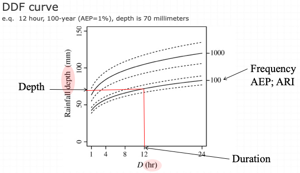
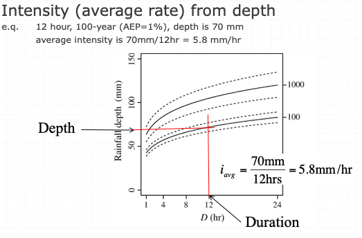
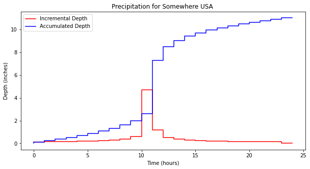

<!DOCTYPE html>

<html>
  <head>
    <meta charset="utf-8" />
    <meta name="viewport" content="width=device-width, initial-scale=1.0" />
    <title>8. Precipitation, Hyetographs, Design Storms &#8212; Engineering Hydrology</title>
    
  <link href="../../_static/css/theme.css" rel="stylesheet" />
  <link href="../../_static/css/index.c5995385ac14fb8791e8eb36b4908be2.css" rel="stylesheet" />

    
  <link rel="stylesheet"
    href="../../_static/vendor/fontawesome/5.13.0/css/all.min.css">
  <link rel="preload" as="font" type="font/woff2" crossorigin
    href="../../_static/vendor/fontawesome/5.13.0/webfonts/fa-solid-900.woff2">
  <link rel="preload" as="font" type="font/woff2" crossorigin
    href="../../_static/vendor/fontawesome/5.13.0/webfonts/fa-brands-400.woff2">

    
      

    
    <link rel="stylesheet" href="../../_static/pygments.css" type="text/css" />
    <link rel="stylesheet" href="../../_static/sphinx-book-theme.css?digest=c3fdc42140077d1ad13ad2f1588a4309" type="text/css" />
    <link rel="stylesheet" type="text/css" href="../../_static/togglebutton.css" />
    <link rel="stylesheet" type="text/css" href="../../_static/copybutton.css" />
    <link rel="stylesheet" type="text/css" href="../../_static/mystnb.css" />
    <link rel="stylesheet" type="text/css" href="../../_static/sphinx-thebe.css" />
    <link rel="stylesheet" type="text/css" href="../../_static/panels-main.c949a650a448cc0ae9fd3441c0e17fb0.css" />
    <link rel="stylesheet" type="text/css" href="../../_static/panels-variables.06eb56fa6e07937060861dad626602ad.css" />
    
  <link rel="preload" as="script" href="../../_static/js/index.1c5a1a01449ed65a7b51.js">

    <script id="documentation_options" data-url_root="../../" src="../../_static/documentation_options.js"></script>
    <script src="../../_static/jquery.js"></script>
    <script src="../../_static/underscore.js"></script>
    <script src="../../_static/doctools.js"></script>
    <script src="../../_static/togglebutton.js"></script>
    <script src="../../_static/clipboard.min.js"></script>
    <script src="../../_static/copybutton.js"></script>
    <script >var togglebuttonSelector = '.toggle, .admonition.dropdown, .tag_hide_input div.cell_input, .tag_hide-input div.cell_input, .tag_hide_output div.cell_output, .tag_hide-output div.cell_output, .tag_hide_cell.cell, .tag_hide-cell.cell';</script>
    <script src="../../_static/sphinx-book-theme.12a9622fbb08dcb3a2a40b2c02b83a57.js"></script>
    <script async="async" src="https://cdnjs.cloudflare.com/ajax/libs/mathjax/2.7.7/latest.js?config=TeX-AMS-MML_HTMLorMML"></script>
    <script type="text/x-mathjax-config">MathJax.Hub.Config({"tex2jax": {"processClass": "tex2jax_process|mathjax_process|math|output_area"}})</script>
    <script async="async" src="https://unpkg.com/thebe@0.5.1/lib/index.js"></script>
    <script >
        const thebe_selector = ".thebe"
        const thebe_selector_input = "pre"
        const thebe_selector_output = ".output"
    </script>
    <script async="async" src="../../_static/sphinx-thebe.js"></script>
    <link rel="index" title="Index" href="../../genindex.html" />
    <link rel="search" title="Search" href="../../search.html" />
    <link rel="next" title="9. Hydrologic Abstractions" href="../10-EvaporationInfiltration/EvaporationInfiltration.html" />
    <link rel="prev" title="7. Streamflow Data Sources and Estimation" href="../07-StreamflowDataModeling/streamflowdatamodeling.html" />
    <meta name="viewport" content="width=device-width, initial-scale=1" />
    <meta name="docsearch:language" content="en" />
    
  </head>
  <body data-spy="scroll" data-target="#bd-toc-nav" data-offset="80">
    
    <div class="container-fluid" id="banner"></div>

    

    <div class="container-xl">
      <div class="row">
          
<div class="col-12 col-md-3 bd-sidebar site-navigation show" id="site-navigation">
    
        <div class="navbar-brand-box">
    <a class="navbar-brand text-wrap" href="../../index.html">
      
        <!-- `logo` is deprecated in Sphinx 4.0, so remove this when we stop supporting 3 -->
        
      
      
      
      
      
      <h1 class="site-logo" id="site-title">Engineering Hydrology</h1>
      
    </a>
</div><form class="bd-search d-flex align-items-center" action="../../search.html" method="get">
  <i class="icon fas fa-search"></i>
  <input type="search" class="form-control" name="q" id="search-input" placeholder="Search this book..." aria-label="Search this book..." autocomplete="off" >
</form><nav class="bd-links" id="bd-docs-nav" aria-label="Main">
    <div class="bd-toc-item active">
        <ul class="nav bd-sidenav">
 <li class="toctree-l1">
  <a class="reference internal" href="../../intro.html">
   Welcome to Engineering Hydrology
  </a>
 </li>
</ul>
<ul class="current nav bd-sidenav">
 <li class="toctree-l1">
  <a class="reference internal" href="../01-Introduction/introduction.html">
   1. Introduction
  </a>
 </li>
 <li class="toctree-l1">
  <a class="reference internal" href="../02-HydrologySoftware/HydrologySoftware.html">
   2. Specialized Software
  </a>
 </li>
 <li class="toctree-l1">
  <a class="reference internal" href="../03-HydrologicCycle/hydrologiccycle.html">
   3. Hydrologic Cycle
  </a>
 </li>
 <li class="toctree-l1">
  <a class="reference internal" href="../05-Watersheds/watersheds.html">
   5. Watersheds
  </a>
 </li>
 <li class="toctree-l1">
  <a class="reference internal" href="../06-ProbabilityEstimation/ProbabilityEstimationModels.html">
   6. Probability Estimation Modeling
  </a>
 </li>
 <li class="toctree-l1">
  <a class="reference internal" href="../07-StreamflowDataModeling/streamflowdatamodeling.html">
   7. Streamflow Data Sources and Estimation
  </a>
 </li>
 <li class="toctree-l1 current active">
  <a class="current reference internal" href="#">
   8. Precipitation, Hyetographs, Design Storms
  </a>
 </li>
 <li class="toctree-l1">
  <a class="reference internal" href="../10-EvaporationInfiltration/EvaporationInfiltration.html">
   9. Hydrologic Abstractions
  </a>
 </li>
 <li class="toctree-l1">
  <a class="reference internal" href="../12-RainfallRunoff/RainfallRunoff.html">
   12. Rainfall-Runoff Modeling, NRCS Runoff Generation
  </a>
 </li>
 <li class="toctree-l1">
  <a class="reference internal" href="../13-RationalModifiedRational/RationalAndModifiedRationalMethod.html">
   13. Rational and Modified Rational (Rainfall-Runoff) Method
  </a>
 </li>
 <li class="toctree-l1">
  <a class="reference internal" href="../14-UnitHydrographs/UnitHydrographs.html">
   14. Unit Hydrographs - I (Analysis)
  </a>
 </li>
 <li class="toctree-l1">
  <a class="reference internal" href="../15-SyntheticUnitHydrographs/SyntheticUnitHydrographs.html">
   15. Unit Hydrographs - II (Synthesis)
  </a>
 </li>
 <li class="toctree-l1">
  <a class="reference internal" href="../16-HEC_HMS/hechms.html">
   16. HEC-HMS
  </a>
 </li>
 <li class="toctree-l1">
  <a class="reference internal" href="../17-ReservoirRouting/reservoirrouting.html">
   17. Routing Hydrographs
  </a>
 </li>
 <li class="toctree-l1">
  <a class="reference internal" href="../23-Groundwater/groundwater.html">
   23. Groundwater Hydrology
  </a>
 </li>
</ul>

    </div>
</nav> <!-- To handle the deprecated key -->

<div class="navbar_extra_footer">
  Powered by <a href="https://jupyterbook.org">Jupyter Book</a>
</div>

</div>


          


          
<main class="col py-md-3 pl-md-4 bd-content overflow-auto" role="main">
    
    <div class="topbar container-xl fixed-top">
    <div class="topbar-contents row">
        <div class="col-12 col-md-3 bd-topbar-whitespace site-navigation show"></div>
        <div class="col pl-md-4 topbar-main">
            
            <button id="navbar-toggler" class="navbar-toggler ml-0" type="button" data-toggle="collapse"
                data-toggle="tooltip" data-placement="bottom" data-target=".site-navigation" aria-controls="navbar-menu"
                aria-expanded="true" aria-label="Toggle navigation" aria-controls="site-navigation"
                title="Toggle navigation" data-toggle="tooltip" data-placement="left">
                <i class="fas fa-bars"></i>
                <i class="fas fa-arrow-left"></i>
                <i class="fas fa-arrow-up"></i>
            </button>
            
            
<div class="dropdown-buttons-trigger">
    <button id="dropdown-buttons-trigger" class="btn btn-secondary topbarbtn" aria-label="Download this page"><i
            class="fas fa-download"></i></button>

    <div class="dropdown-buttons">
        <!-- ipynb file if we had a myst markdown file -->
        
        <!-- Download raw file -->
        <a class="dropdown-buttons" href="../../_sources/lessons/09-Precipitation/precipitation.ipynb"><button type="button"
                class="btn btn-secondary topbarbtn" title="Download source file" data-toggle="tooltip"
                data-placement="left">.ipynb</button></a>
        <!-- Download PDF via print -->
        <button type="button" id="download-print" class="btn btn-secondary topbarbtn" title="Print to PDF"
            onClick="window.print()" data-toggle="tooltip" data-placement="left">.pdf</button>
    </div>
</div>

            <!-- Source interaction buttons -->

<div class="dropdown-buttons-trigger">
    <button id="dropdown-buttons-trigger" class="btn btn-secondary topbarbtn"
        aria-label="Connect with source repository"><i class="fab fa-github"></i></button>
    <div class="dropdown-buttons sourcebuttons">
        <a class="repository-button"
            href="https://github.com/executablebooks/jupyter-book"><button type="button" class="btn btn-secondary topbarbtn"
                data-toggle="tooltip" data-placement="left" title="Source repository"><i
                    class="fab fa-github"></i>repository</button></a>
        <a class="issues-button"
            href="https://github.com/executablebooks/jupyter-book/issues/new?title=Issue%20on%20page%20%2Flessons/09-Precipitation/precipitation.html&body=Your%20issue%20content%20here."><button
                type="button" class="btn btn-secondary topbarbtn" data-toggle="tooltip" data-placement="left"
                title="Open an issue"><i class="fas fa-lightbulb"></i>open issue</button></a>
        
    </div>
</div>

            <!-- Full screen (wrap in <a> to have style consistency -->

<a class="full-screen-button"><button type="button" class="btn btn-secondary topbarbtn" data-toggle="tooltip"
        data-placement="bottom" onclick="toggleFullScreen()" aria-label="Fullscreen mode"
        title="Fullscreen mode"><i
            class="fas fa-expand"></i></button></a>

            <!-- Launch buttons -->

<div class="dropdown-buttons-trigger">
    <button id="dropdown-buttons-trigger" class="btn btn-secondary topbarbtn"
        aria-label="Launch interactive content"><i class="fas fa-rocket"></i></button>
    <div class="dropdown-buttons">
        
        <a class="binder-button" href="https://mybinder.org/v2/gh/executablebooks/jupyter-book/master?urlpath=tree/docs/lessons/09-Precipitation/precipitation.ipynb"><button type="button"
                class="btn btn-secondary topbarbtn" title="Launch Binder" data-toggle="tooltip"
                data-placement="left">Binder</button></a>
        
        
        
        
    </div>
</div>

        </div>

        <!-- Table of contents -->
        <div class="d-none d-md-block col-md-2 bd-toc show">
            
            <div class="tocsection onthispage pt-5 pb-3">
                <i class="fas fa-list"></i> Contents
            </div>
            <nav id="bd-toc-nav" aria-label="Page">
                <ul class="visible nav section-nav flex-column">
 <li class="toc-h2 nav-item toc-entry">
  <a class="reference internal nav-link" href="#readings">
   Readings
  </a>
 </li>
 <li class="toc-h2 nav-item toc-entry">
  <a class="reference internal nav-link" href="#videos">
   Videos
  </a>
 </li>
 <li class="toc-h2 nav-item toc-entry">
  <a class="reference internal nav-link" href="#outline">
   Outline
  </a>
 </li>
 <li class="toc-h2 nav-item toc-entry">
  <a class="reference internal nav-link" href="#description">
   Description
  </a>
 </li>
 <li class="toc-h2 nav-item toc-entry">
  <a class="reference internal nav-link" href="#forms-of-precipitation">
   Forms of Precipitation
  </a>
  <ul class="nav section-nav flex-column">
   <li class="toc-h3 nav-item toc-entry">
    <a class="reference internal nav-link" href="#types-of-precipitation-by-origin">
     Types of Precipitation (by Origin)
    </a>
   </li>
   <li class="toc-h3 nav-item toc-entry">
    <a class="reference internal nav-link" href="#convective-storms">
     Convective Storms
    </a>
   </li>
   <li class="toc-h3 nav-item toc-entry">
    <a class="reference internal nav-link" href="#orographic-storms">
     Orographic Storms
    </a>
   </li>
   <li class="toc-h3 nav-item toc-entry">
    <a class="reference internal nav-link" href="#cyclonic-storms">
     Cyclonic Storms
    </a>
   </li>
  </ul>
 </li>
 <li class="toc-h2 nav-item toc-entry">
  <a class="reference internal nav-link" href="#precipitation-variables-of-interest">
   Precipitation Variables of Interest
  </a>
 </li>
 <li class="toc-h2 nav-item toc-entry">
  <a class="reference internal nav-link" href="#depth-duration-frequency">
   Depth-Duration-Frequency
  </a>
 </li>
 <li class="toc-h2 nav-item toc-entry">
  <a class="reference internal nav-link" href="#intensity-duration-frequency">
   Intensity-Duration-Frequency
  </a>
 </li>
 <li class="toc-h2 nav-item toc-entry">
  <a class="reference internal nav-link" href="#design-storms">
   Design Storms
  </a>
 </li>
 <li class="toc-h2 nav-item toc-entry">
  <a class="reference internal nav-link" href="#design-storm-characteristics">
   Design Storm Characteristics
  </a>
 </li>
 <li class="toc-h2 nav-item toc-entry">
  <a class="reference internal nav-link" href="#rainfall-distributions">
   Rainfall Distributions
  </a>
  <ul class="nav section-nav flex-column">
   <li class="toc-h3 nav-item toc-entry">
    <a class="reference internal nav-link" href="#design-distributions">
     Design Distributions
    </a>
   </li>
  </ul>
 </li>
 <li class="toc-h2 nav-item toc-entry">
  <a class="reference internal nav-link" href="#nrcs-scs-rainfall-type-curves">
   NRCS (SCS) Rainfall Type Curves
  </a>
 </li>
 <li class="toc-h2 nav-item toc-entry">
  <a class="reference internal nav-link" href="#texas-empirical-hyetograph-based-design-storms">
   Texas Empirical Hyetograph-Based Design Storms
  </a>
 </li>
 <li class="toc-h2 nav-item toc-entry">
  <a class="reference internal nav-link" href="#historical-observations">
   Historical Observations
  </a>
  <ul class="nav section-nav flex-column">
   <li class="toc-h3 nav-item toc-entry">
    <a class="reference internal nav-link" href="#ncdc">
     NCDC
    </a>
   </li>
  </ul>
 </li>
 <li class="toc-h2 nav-item toc-entry">
  <a class="reference internal nav-link" href="#missing-data-replacement-techniques">
   Missing Data Replacement Techniques
  </a>
 </li>
 <li class="toc-h2 nav-item toc-entry">
  <a class="reference internal nav-link" href="#example">
   Example
  </a>
 </li>
 <li class="toc-h2 nav-item toc-entry">
  <a class="reference internal nav-link" href="#precipitation-over-an-area">
   Precipitation over an Area
  </a>
  <ul class="nav section-nav flex-column">
   <li class="toc-h3 nav-item toc-entry">
    <a class="reference internal nav-link" href="#approximation-of-distributed-precipitation-data-from-point-gage-data">
     Approximation of Distributed Precipitation Data from Point Gage Data
    </a>
   </li>
   <li class="toc-h3 nav-item toc-entry">
    <a class="reference internal nav-link" href="#arithmetic-mean">
     Arithmetic Mean
    </a>
   </li>
   <li class="toc-h3 nav-item toc-entry">
    <a class="reference internal nav-link" href="#polygon-weighted-methods">
     Polygon weighted methods.
    </a>
   </li>
  </ul>
 </li>
 <li class="toc-h2 nav-item toc-entry">
  <a class="reference internal nav-link" href="#areal-reduction-factors">
   Areal Reduction Factors
  </a>
 </li>
 <li class="toc-h2 nav-item toc-entry">
  <a class="reference internal nav-link" href="#radar-precipitation-estimation">
   Radar Precipitation Estimation
  </a>
 </li>
</ul>

            </nav>
        </div>
    </div>
</div>
    <div id="main-content" class="row">
        <div class="col-12 col-md-9 pl-md-3 pr-md-0">
        
              <div>
                
  <div class="tex2jax_ignore mathjax_ignore section" id="precipitation-hyetographs-design-storms">
<h1>8. Precipitation, Hyetographs, Design Storms<a class="headerlink" href="#precipitation-hyetographs-design-storms" title="Permalink to this headline">¶</a></h1>
<div class="admonition-course-website admonition">
<p class="admonition-title">Course Website</p>
<p><a class="reference external" href="http://54.243.252.9/ce-3354-webroot/">Link to Course Website</a></p>
</div>
<div class="section" id="readings">
<h2>Readings<a class="headerlink" href="#readings" title="Permalink to this headline">¶</a></h2>
<ol class="simple">
<li><p><a class="reference external" href="https://www.waveland.com/browse.php?t=384">Gupta, R.S., 2017. Hydrology and Hydraulic Systems, pp. 46-59</a></p></li>
<li><p><a class="reference external" href="http://54.243.252.9/ce-3354-webroot/3-Readings/CMM1988/">Chow, V.T., Maidment,D.M., and Mays, L.W. (1998) Applied Hydrology, McGraw Hill, pp. 444-493</a></p></li>
<li><p><a class="reference external" href="http://54.243.252.9/ce-3354-webroot/3-Readings/FHWAHighwayHydrology/FHWA-NHI-02-001.pdf">McCuen, R.H., Johnson, P.A., and Ragan, R.M. (2002) Highway Hydrology. HDS-2 (2ed) FHWA-NHI-02-001 (Read pages 3-1 to 3-5; 4-86 to 4-89; 5-1 to 5-8; 5-16 to 5-17)</a></p></li>
<li><p><a class="reference external" href="http://54.243.252.9/ce-3354-webroot/3-Readings/TXDOT-HYDM-2014/txdot-hdm-2014.pdf">Texas Hydraulic Design Manual (2014-1) Texas Department of Transportation. (2014) Hydraulic Design Manual (Read pages 4-1 to 4-5; 4-31 to 4-35)</a></p></li>
<li><p><a class="reference external" href="http://54.243.252.9/ce-3354-webroot/3-Readings/LS1973/linear-systems-hydrology-dooge.pdf">Linear Theory of Hydrologic Systems Dooge, J.C. I. (1973) Linear Theory of Hydrologic Systems. USDA ARS Technical Bulletin No. 1468. (Read pages 127 to 147)</a></p></li>
<li><p><a class="reference external" href="http://54.243.252.9/ce-3354-webroot/ce3354book/lessons/lesson04/precipitation-notes.pdf">Cleveland, T. G. (2015) <em>Engineering Hydrology Notes to Accompany CE 3354 (Hand-written)</em>, Department of Civil, Environmental, and Construction Engineering, Whitacre College of Engineering.</a></p></li>
<li><p><a class="reference external" href="http://54.243.252.9/ce-3354-webroot/1-Lectures-2017/Lecture05.pdf">Cleveland, T. G. (2017) <em>Engineering Hydrology Notes to Accompany CE 3354 (Discrete Data Analysis; Risk Based Design; Regression Equations)</em>, Department of Civil, Environmental, and Construction Engineering, Whitacre College of Engineering.</a></p></li>
<li><p><a class="reference external" href="http://54.243.252.9/ce-3354-webroot/1-Lectures-2017/Lecture06.pdf">Cleveland, T. G. (2017) <em>Engineering Hydrology Notes to Accompany CE 3354 (Probability Estimation Modeling)</em>, Department of Civil, Environmental, and Construction Engineering, Whitacre College of Engineering.</a></p></li>
<li><p><a class="reference external" href="http://54.243.252.9/ce-3354-webroot/1-Lectures-2017/Lecture08.pdf">Cleveland, T. G. (2017) <em>Engineering Hydrology Notes to Accompany CE 3354 (Point Precipitation; Design Storms)</em>, Department of Civil, Environmental, and Construction Engineering, Whitacre College of Engineering.</a></p></li>
<li><p><a class="reference external" href="http://54.243.252.9/ce-3354-webroot/3-Readings/TRB-2008-Paper/TRB_2008_IntensityDesign_Rev2.pdf">Cleveland, T.G., and Thompson, D.B., 2008. ``Rainfall Intensity in Design.’’ 87-th Annual Transportation Research Board Meeting, January 14-18, Washington, D.C.</a></p></li>
<li><p><a class="reference external" href="http://54.243.252.9/ce-3354-webroot/3-Readings/EmpiricalHyetographs/sir2004-5075.pdf">Williams-Sether, T., Asquith, W.H., Thompson, D.B., Cleveland, T.G., and X. Fang. 2004. ``Empirical, Dimensionless, Cumulative-Rainfall Hyetographs for Texas.’’ U.S.Geological Survey Scientific Investigations Report 2004-5075, 138p. </a></p></li>
<li><p><a class="reference external" href="https://www.fhwa.dot.gov/engineering/hydraulics/pubs/hec/hec19.pdf">HEC-19 (old)</a></p></li>
<li><p><a class="reference external" href="https://www.fhwa.dot.gov/engineering/hydraulics/pubs/hif23050.pdf">HEC-19 (Updated)</a></p></li>
<li><p><a class="reference external" href="https://www.rmets.org/metmatters/rain-sleet-or-snow">McCabe, K. (2022) “Rain, sleet or snow?” Royal Meterological Society</a></p></li>
<li><p><a class="reference external" href="http://54.243.252.9/ce-5361-webroot/3-Readings/NormalRatioMethod/mwr-080-08-0129.pdf">PAULHUS, J. L. H. , and M. A. KOHLER. “INTERPOLATION OF MISSING PRECIPITATION RECORDS”. Monthly Weather Review 80.8 (1952): 129-133.</a></p></li>
<li><p><a class="reference external" href="http://54.243.252.9/ce-5361-webroot/3-Readings/MissingRainfallData/MissingRainfallData.pdf">Missing Rainfall Data Replacement Techniques</a></p></li>
<li><p><a class="reference external" href="https://pubs.usgs.gov/wri/wri99-4267/pdf/wri99-4267.pdf">Areal-Reduction Factors for the Precipitation of the 1-Day Design Storm in Texas USGS WRI 99-4267</a></p></li>
</ol>
</div>
<div class="section" id="videos">
<h2>Videos<a class="headerlink" href="#videos" title="Permalink to this headline">¶</a></h2>
<ol class="simple">
<li><p><a class="reference external" href="https://www.youtube.com/watch?v=BB7g_uK-zsg">Engineering Hydrology-Precipitation</a></p></li>
<li><p><a class="reference external" href="https://www.youtube.com/watch?v=1wreQRWF1FM">How do we get Rain, Hail, Freezing Rain, Sleet &amp; Snow? (YouTube)</a></p></li>
<li><p><a class="reference external" href="https://www.youtube.com/watch?v=Lw6AWVCdEtM">Types of precipitation explained (YouTube)</a></p></li>
<li><p><a class="reference external" href="https://www.youtube.com/watch?v=U8AAU19CgB0">Methods of Finding Average Rainfall (YouTube)</a></p></li>
<li><p><a class="reference external" href="https://www.youtube.com/watch?v=JXSwKmfMZJo">Rainfall Statistics, Intensity-Duration-Frequency (IDF) Curves - Part 1</a></p></li>
<li><p><a class="reference external" href="https://www.youtube.com/watch?v=Ui-VYSB9nOY">Rainfall Statistics, How to Interpret Intensity-Duration-Frequency (IDF) Curves - Part 2</a></p></li>
<li><p><a class="reference external" href="https://www.youtube.com/watch?v=VV00CaM48f8">IDF Curves (YouTube)</a></p></li>
<li><p><a class="reference external" href="https://www.youtube.com/watch?v=wdb13pFhp-0">NRCS 24-h Rainfall Distribution (YouTube)</a></p></li>
<li><p><a class="reference external" href="https://www.youtube.com/watch?v=BbvOmP3lQio">Dimensionless Hyetograph for Design Storm Modeling (YouTube Animation)</a></p></li>
<li><p><a class="reference external" href="https://www.youtube.com/watch?v=RFWtqkUZjRg&amp;t=2601s">NRCS/SCS Design Storms (YouTube)</a></p></li>
<li><p><a class="reference external" href="https://www.youtube.com/watch?v=Smg_c93luwQ">Areal extent of rainfall/how to measure rainfall/rainfall radar/rainfall measurement </a></p></li>
<li><p><a class="reference external" href="https://www.youtube.com/watch?v=qhXj3s9qwTE">Weather Radar 101</a></p></li>
</ol>
</div>
<div class="section" id="outline">
<h2>Outline<a class="headerlink" href="#outline" title="Permalink to this headline">¶</a></h2>
<ol class="simple">
<li><p>What is precipitation</p></li>
<li><p>Point precipitation</p></li>
<li><p>Probability estimation Modeling</p></li>
<li><p>Design Storms</p></li>
<li><p>Areal precipitation</p></li>
<li><p>ARF approach</p></li>
<li><p>Radar rainfall</p></li>
</ol>
</div>
<div class="section" id="description">
<h2>Description<a class="headerlink" href="#description" title="Permalink to this headline">¶</a></h2>
<p>Precipitation is the water which falls from the atmosphere in either liquid or solid form. It results from the condensation of moisture in the atmosphere due to cooling of a parcel of air. The most common cause of cooling is dynamic or adiabatic lifting of the air. Adiabatic lifting means that a
given parcel of air is caused to rise with resultant cooling and possible condensation into very small cloud droplets. If these droplets coalesce and be-
come of sufficient size to overcome the air resistance, precipitation in some form results.</p>
<p>Surface water hydrology really begins before the precipitate hits the ground.  The form of precipitate is important (rain, sleet, hail, or snow).  For example it takes about 10 inches of snow to produce the same water as 1 inch of rain.  Other factors of importance are the size of the area over which the precipitation falls, the intensity of the precipitation, and its duration.</p>
<p></p>
<p>Once the precipitation hits the ground several things can happen.  It can evaporate immediately, especially if the surface is hot, and relatively impervious.  If the surface is dry and/or porous, the precipitate may infiltrate into the ground or may just wet the surface.   The process of just wetting leaves and blades of grass is called interception.  Some of the infiltrated water is returned to the atmosphere by transpiration by plants.  Collectively the return to the atmosphere is called evapotranspiration.  The precipitate may be trapped in small depressions (puddles).  It may remain in these puddles until it evaporates or until the depressions fill and overflow.  Finally it may run off directly to the nearest stream or lake to become surface water.  The four “processes” (evapotranspiration, infiltration, interception, and depression storage) that reduce the amount of precipitation available for direct runoff are collectively called abstractions.  In drainage engineering, the loss model is how we account for these processes.</p>
</div>
<div class="section" id="forms-of-precipitation">
<h2>Forms of Precipitation<a class="headerlink" href="#forms-of-precipitation" title="Permalink to this headline">¶</a></h2>
<p>Precipitation occurs in various forms. Rain is precipitation that is in the liquid state when it reaches the earth.
<br>
Snow is frozen water in a crystalline state, while hail is frozen water in a ‘massive’ state. <br>
<br>
Sleet is melted snow which is an intermixture of rain and snow. Of course, precipitation that falls to earth in the frozen state cannot become part of the runoff process until thawing and melting occur. Much of the precipitation that falls in mountainous areas and in the northerly latitudes falls in frozen form and is stored as snowpack or ice until warmer temperatures prevail.</p>
<p><a class="reference external" href="https://youtu.be/cYjOEQhA_RI">Rain, Sleet, or Snow (YouTube Video)</a></p>
<div class="section" id="types-of-precipitation-by-origin">
<h3>Types of Precipitation (by Origin)<a class="headerlink" href="#types-of-precipitation-by-origin" title="Permalink to this headline">¶</a></h3>
<p>Precipitation can be classified by the origin of the lifting motion which
causes the preci pi ta ti on. Each type is characterized by different spatial
and temporal rainfall regimens. There are three major types of storms which
can be classified as follows:</p>
<ol class="simple">
<li><p><strong>Convective Storms.</strong>  Convective storms are atmospheric disturbances characterized by strong upward movement of air. They occur when warm, moist air rises, cools, and condenses, forming clouds and often leading to precipitation. <!--The two primary types of convective storms are thunderstorms and tornadoes. Thunderstorms are typically composed of cumulonimbus clouds and are accompanied by lightning, thunder, heavy rain, and sometimes hail. They form when warm, moist air rises rapidly, creating instability in the atmosphere. Tornadoes, on the other hand, are rapidly rotating columns of air that extend from a thunderstorm to the ground. They form within severe thunderstorms and can cause significant damage due to their strong winds.--></p></li>
<li><p><strong>Orographic Storms.</strong>  Orographic storms, also known as orographic precipitation or orographic lifting, occur when air is forced to rise over elevated terrain, such as mountains or hills. As the air moves upward, it cools and condenses, leading to cloud formation and precipitation. <!-- This process happens on the windward side of the mountain, where moist air is lifted and cooled, often resulting in increased rainfall or snowfall.The lifting of air over the terrain causes the moisture in the air to condense and form clouds. As the air continues to rise, it cools further, leading to more significant precipitation on the windward side of the mountain. The leeward side, or the "rain shadow" side, tends to experience drier conditions as the air descends and warms, having already released much of its moisture on the windward side.--></p></li>
<li><p><strong>Cyclonic Storms.</strong>  Cyclonic storms, also known as cyclones or hurricanes (depending on the region), are powerful low-pressure systems characterized by rotating winds and organized thunderstorms. These storms typically form over warm ocean waters, where moist air rises and creates an area of low pressure.  As the warm air rises, it cools and condenses, forming clouds and releasing heat energy that fuels the storm’s development. <!--The Earth's rotation causes the system to spin, creating a circular pattern of winds. In the Northern Hemisphere, cyclonic storms rotate counterclockwise, while in the Southern Hemisphere, they rotate clockwise.  Cyclonic storms go through various stages of development, starting as tropical disturbances and progressing into tropical depressions, tropical storms, and finally, reaching hurricane or typhoon status, depending on their location. They are categorized by their sustained wind speeds, with hurricanes or typhoons reaching higher wind velocities.  These storms can cause extensive damage due to their strong winds, heavy rainfall, storm surges, and potential for flooding. Proper forecasting and preparedness are crucial in regions prone to cyclonic storms to mitigate their impact on communities and infrastructure.--></p></li>
</ol>
</div>
<div class="section" id="convective-storms">
<h3>Convective Storms<a class="headerlink" href="#convective-storms" title="Permalink to this headline">¶</a></h3>
<p>Precipitation from convective storms results as warm moist air rises from
lower elevations into cooler overlying air as shown below.</p>
<p></p>
<p>The characteristic form of convective precipitation is the summer thunderstorm. The surface of the earth is warmed considerably by mid-to late afternoon of a summer day, the surface imparting its heat to the adjacent air. The warmed air begins rising through the overlying air, and if proper moisture content conditions are met (condensation level), large quantities of moisture will be condensed from the rapidly rising, rapidly cooling air. The rapid condensation may often result in huge quantities of rain from a single thunderstorm spawned by convective action, and very large rainfall rates are quite common beneath slowly moving thunderstorms.</p>
</div>
<div class="section" id="orographic-storms">
<h3>Orographic Storms<a class="headerlink" href="#orographic-storms" title="Permalink to this headline">¶</a></h3>
<p>Orographic precipitation results as air is forced to rise over a fixed position geographic feature such as a range of mountains. The characteristic precipitation patterns of the Pacific coastal states are the result of significant orographic influences. Mountain slopes that face the wind (windward) are much wetter than the opposite (leeward) slopes. In the Cascade Range in Washington and Oregon, the west-facing slopes may receive upwards of 100 inches (254 cm) of precipitation annually, while the east facing slopes, only a few miles away over the crest of the mountains, receive on the order of 20 inches (51 an) of precipitation annually.</p>
<p></p>
</div>
<div class="section" id="cyclonic-storms">
<h3>Cyclonic Storms<a class="headerlink" href="#cyclonic-storms" title="Permalink to this headline">¶</a></h3>
<p>Cyclonic precipitation is caused by the rising or lifting of air as it converges on an area of low pressure. Air moves from areas of higher pressure
toward areas of lower pressure. In the middle latitudes, cyclonic storms generally move from west to east and have both cold and warm air associated with them. These mid-latitude cyclones are sometimes called extra-tropical cyclones or continental storms. Continental storms occur at the boundaries of air of significantly different temperatures. A disturbance in the boundary between the two air parcels can grow, appearing as a wave as it travels from west to east along the boundary. Generally, on a weather map, the cyclonic storm will appear as shown in below with two boundaries or fronts developed.</p>
<p></p>
<p>One has warm air being pushed into an area of cool air, while the other has cool air pushed into an area of warmer air. This type of air movement is called a front; where warm air is the aggressor it is a warm front, and where cold air is the aggressor it is a cold front. The precipitation associated with a cold front is usually heavy and covers a relatively small area, whereas the precipitation associated with a warm front is more passive, smaller in quantity, but covers a much larger area, as pictured below.</p>
<p></p>
<p>Tornadoes and other <strong>violent</strong> weather phenomena are associated with cold fronts.</p>
</div>
</div>
<div class="section" id="precipitation-variables-of-interest">
<h2>Precipitation Variables of Interest<a class="headerlink" href="#precipitation-variables-of-interest" title="Permalink to this headline">¶</a></h2>
<p>There are several variables of interest:</p>
<ol class="simple">
<li><p>Intensity: how hard it rains (a rate)</p></li>
<li><p>Duration: how long it rains at any given intensity (a time)</p></li>
<li><p>Frequency: how often it rains at any given intensity and duration (a probability)</p></li>
<li><p>Spatial Distribution: the rainfall depth over an area (a surface/volume)</p></li>
<li><p>Temporal Distribution: the time series of rainfall depth over an area (or point).  The point feature is called a <em>hyetograph</em>.</p></li>
</ol>
<p>Rainfall probabilities are expressed as a combination of frequency (probability), depth, and duration. The inclusion of depth and duration reflects that different “storms” can produce the same total depth, but deliver that depth over much different times</p>
<div class="admonition note">
<p class="admonition-title">Note</p>
<p>A slow gentle rain for a long time versus a hard rain for a short time can have the same total depth, but vastly different hydrologic impact</p>
</div>
</div>
<div class="section" id="depth-duration-frequency">
<h2>Depth-Duration-Frequency<a class="headerlink" href="#depth-duration-frequency" title="Permalink to this headline">¶</a></h2>
<ul class="simple">
<li><p>Depth of rainfall is the accumulated depth (in a gage) over some time interval.</p></li>
<li><p>Duration is that time interval.</p></li>
<li><p>Frequency is the probability (like AEP) of observing the depth over the given duration.</p></li>
</ul>
<p></p>
<p>An alternate to DDF is to present the magnitude as an intensity (a rate). The intensity is the ratio of an accumulated depth to some averaging time, usually the duration.</p>
<div class="math notranslate nohighlight">
\[ i_{avg}=\frac{D}{T_C}\]</div>
<p>where <span class="math notranslate nohighlight">\(D\)</span> is the depth, and <span class="math notranslate nohighlight">\(T_C\)</span> is the averaging time</p>
<div class="admonition note">
<p class="admonition-title">Note</p>
<p>Intensity is NOT the instantaneous rainfall rate.</p>
<blockquote>
<div><p>The symbol <span class="math notranslate nohighlight">\(T_C\)</span> represents the <a class="reference external" href="https://en.wikipedia.org/wiki/Time_of_concentration">time of concentration</a> for a watershed, <strong>if</strong> the averaging time happens to coincide with the time needed for water to flow from the most remote point in a watershed to the watershed outlet; otherwise its just an arbitrary averaging time.</p>
</div></blockquote>
</div>
<p>Intensity is related to depth and duration.</p>
<p></p>
<p>The intensity is the ratio of depth to a particular duration.  For example, if the duration or averaging time is 12 hours and the accumulated depth for 12 hours is 70 mm (about 3 inches), then the average rate is 70mm/12hours = 5.8 mm/hour.  This average rate, if applied over 12 hours will produce the depth of 70mm.</p>
<p>Conversion from Depth-Duration to Intensity-Duration is obtained by the ratio of depth to duration</p>
<div class="math notranslate nohighlight">
\[ i_{avg}=\frac{D}{T_C}\]</div>
<p>Conversion from Intensity-Duration to Depth-Duration is obtained by multiplication</p>
</div>
<div class="section" id="intensity-duration-frequency">
<h2>Intensity-Duration-Frequency<a class="headerlink" href="#intensity-duration-frequency" title="Permalink to this headline">¶</a></h2>
<p>The family of curves that depicts the relationship between the intensity, duration, and frequency of precipitation at a point is a fundamental part of the rational equation method for storm water drainage design.</p>
<p></p>
<p>Conversion from Depth-Duration to Intensity-Duration is obtained by the ratio of depth to duration</p>
<div class="math notranslate nohighlight">
\[ i_{avg}=\frac{D}{T_C}\]</div>
<p>Conversion from Intensity-Duration to Depth-Duration is obtained by multiplication</p>
<div class="math notranslate nohighlight">
\[ D = i_{avg}*{T_C}\]</div>
<!-- ## References

1. [Chow, V.T., Maidment,D.M., and Mays, L.W. (1998) Applied Hydrology, McGraw Hill, (Read pages 26 to 31; 416 to 423)](http://54.243.252.9/ce-3354-webroot/3-Readings/CMM1988/) 

2. [McCuen, R.H., Johnson, P.A., and Ragan, R.M. (2002) Highway Hydrology. HDS-2 (2ed) FHWA-NHI-02-001 (Read pages 3-1 to 3-5; 4-86 to 4-89; 5-1 to 5-8; 5-16 to 5-17)](http://54.243.252.9/ce-3354-webroot/3-Readings/FHWAHighwayHydrology/FHWA-NHI-02-001.pdf)

3. [Texas Hydraulic Design Manual (2014-1) Texas Department of Transportation. (2014) Hydraulic Design Manual (Read pages 4-1 to 4-5; 4-31 to 4-35)](http://54.243.252.9/ce-3354-webroot/3-Readings/TXDOT-HYDM-2014/txdot-hdm-2014.pdf)

4. [Linear Theory of Hydrologic Systems Dooge, J.C. I. (1973) Linear Theory of Hydrologic Systems. USDA ARS Technical Bulletin No. 1468. (Read pages 127 to 147)](http://54.243.252.9/ce-3354-webroot/3-Readings/LS1973/linear-systems-hydrology-dooge.pdf)

5. [Cleveland, T. G. (2015) *Engineering Hydrology Notes to Accompany CE 3354 (Hand-written)*, Department of Civil, Environmental, and Construction Engineering, Whitacre College of Engineering.](http://54.243.252.9/ce-3354-webroot/ce3354book/lessons/lesson04/precipitation-notes.pdf)

6. [Cleveland, T. G. (2017) *Engineering Hydrology Notes to Accompany CE 3354 (Discrete Data Analysis; Risk Based Design; Regression Equations)*, Department of Civil, Environmental, and Construction Engineering, Whitacre College of Engineering.](http://54.243.252.9/ce-3354-webroot/1-Lectures-2017/Lecture05.pdf)

7. [Cleveland, T. G. (2017) *Engineering Hydrology Notes to Accompany CE 3354 (Probability Estimation Modeling)*, Department of Civil, Environmental, and Construction Engineering, Whitacre College of Engineering.](http://54.243.252.9/ce-3354-webroot/1-Lectures-2017/Lecture06.pdf)

8. [Cleveland, T. G. (2017) *Engineering Hydrology Notes to Accompany CE 3354 (Point Precipitation; Design Storms)*, Department of Civil, Environmental, and Construction Engineering, Whitacre College of Engineering.](http://54.243.252.9/ce-3354-webroot/1-Lectures-2017/Lecture08.pdf)

9. [Cleveland, T.G., and Thompson, D.B., 2008. ``Rainfall Intensity in Design.'' 87-th Annual Transportation Research Board Meeting, January 14-18, Washington, D.C.](http://54.243.252.9/ce-3354-webroot/3-Readings/TRB-2008-Paper/TRB_2008_IntensityDesign_Rev2.pdf)

10. [Williams-Sether, T., Asquith, W.H., Thompson, D.B., Cleveland, T.G., and X. Fang. 2004. ``Empirical, Dimensionless, Cumulative-Rainfall Hyetographs for Texas.'' U.S.Geological Survey Scientific Investigations Report 2004-5075, 138p. ](http://54.243.252.9/ce-3354-webroot/3-Readings/EmpiricalHyetographs/sir2004-5075.pdf)

11. [hec19](https://www.fhwa.dot.gov/engineering/hydraulics/pubs/hec/hec19.pdf)

12. [McCabe, K. (2022) "Rain, sleet or snow?" Royal Meterological Society](https://www.rmets.org/metmatters/rain-sleet-or-snow)

13. [PAULHUS, J. L. H. , and M. A. KOHLER. "INTERPOLATION OF MISSING PRECIPITATION RECORDS". Monthly Weather Review 80.8 (1952): 129-133.](http://54.243.252.9/ce-5361-webroot/3-Readings/NormalRatioMethod/mwr-080-08-0129.pdf)

14. [Missing Rainfall Data Replacement Techniques](http://54.243.252.9/ce-5361-webroot/3-Readings/MissingRainfallData/MissingRainfallData.pdf)

15. [Areal-Reduction Factors for the Precipitation of the 1-Day Design Storm in Texas USGS WRI 99-4267](https://pubs.usgs.gov/wri/wri99-4267/pdf/wri99-4267.pdf) 
--></div>
<div class="section" id="design-storms">
<h2>Design Storms<a class="headerlink" href="#design-storms" title="Permalink to this headline">¶</a></h2>
<p>A design storm is a theoretical or hypothetical weather event used by engineers, urban planners, and hydrologists as a standard to simulate and predict the potential impact of extreme weather conditions on a particular area. It is employed in the design and planning of various structures and systems to ensure they can withstand or manage the expected stresses caused by intense rainfall or other weather-related factors.</p>
</div>
<div class="section" id="design-storm-characteristics">
<h2>Design Storm Characteristics<a class="headerlink" href="#design-storm-characteristics" title="Permalink to this headline">¶</a></h2>
<p>The characteristics of a design storm typically include:</p>
<ul class="simple">
<li><p>Intensity: The rate of rainfall or snowfall during the storm, often measured in inches per hour or millimeters per hour.</p></li>
<li><p>Duration: The period over which the intense rainfall or weather event persists, often measured in hours.</p></li>
<li><p>Frequency: Often associated with a particular return period (e.g., 10-year storm, 50-year storm, 100-year storm), representing the average time interval between occurrences of storms of similar magnitude.</p></li>
</ul>
<p>For instance, a 100-year design storm doesn’t mean it occurs once every century; rather, it indicates that there’s a 1% chance of this intensity of storm happening in any given year.</p>
<p>Design storms are used in various engineering and urban planning scenarios, such as:</p>
<ul class="simple">
<li><p>Hydraulic Design: Designing stormwater drainage systems, sewers, culverts, and other structures to handle anticipated water flow during extreme weather events.</p></li>
<li><p>Floodplain Management: Assessing the potential impact of flooding and creating regulations for construction in flood-prone areas.</p></li>
<li><p>Infrastructure Design: Designing bridges, dams, and other structures to withstand the forces exerted by extreme weather conditions.</p></li>
</ul>
<p>These storms are not exact events that have occurred in the past; rather, they’re created based on statistical analyses of historical weather data to provide a standard for planning and design purposes. They assist in creating structures and systems that can manage the potential stress of extreme weather events, ensuring safety and functionality within the built environment.</p>
<p>Design storms are statistical models of such temporal behavior and are used in hydrologic models when hydrographs need to be generated</p>
</div>
<div class="section" id="rainfall-distributions">
<h2>Rainfall Distributions<a class="headerlink" href="#rainfall-distributions" title="Permalink to this headline">¶</a></h2>
<ul class="simple">
<li><p>Rainfall distributions represent temporal patterns of a storm.</p></li>
<li><p>A rainfall distribution is also called a hyetograph.</p></li>
<li><p>Rainfall distributions are used when we need to estimate an entire hydrograph.</p></li>
</ul>
<div class="admonition-discrete-data-analysis admonition">
<p class="admonition-title">Discrete Data Analysis</p>
<p>The Figure below is a representation of some continuous process.  To extract values by measurements only occurs at discrete points in time. These samples are reconstructed in a variety of ways to restore the original representation.</p>
<p></p>
<p>Real data are always some kind of discrete sample</p>
<ul class="simple">
<li><p>The “pulse” type is typical – and is called incremental data.</p></li>
<li><p>For instance, incremental rainfall would be the catch over some time interval (<span class="math notranslate nohighlight">\(\Delta t\)</span> in the figure)</p></li>
<li><p>An alternative way to represent the data is with a cumulative representation (which is the running sum of the incremental data)</p></li>
</ul>
<p>The Figure below depicts the relationship between incremental and cumulative representations. Each “block” represents the amount of rainfall for the time interval</p>
<ul class="simple">
<li><p>The collection of blocks is called “incremental” rainfall (red)</p></li>
<li><p>The running sum of the blocks is the cumulative distribution (blue)</p></li>
</ul>
<p>A particular block is indicated with a height of about one, and time duration also one.  If for instance the block represents a depth the implication is that after one hour (from time 4 to 5 in the drawing) the depth added to some location is one unit.</p>
<p></p>
<p>If these are watershed inches, then the drawing sugests that from hour zero to one, zero inches of precipitation occur, from hour one to two, about 1/4 inch; from hour 2 to 3, about 0.4 inch; from hour 3 to 4, about 0.7 inch; and hour 4 to 5; 1 inch; and so on.  If we tabulated the information we would have</p>
<table class="colwidths-auto table">
<thead>
<tr class="row-odd"><th class="text-align:right head"><p>Time</p></th>
<th class="text-align:right head"><p>Incremental Depth (Red)</p></th>
<th class="text-align:right head"><p>Accumulated Depth (Blue)</p></th>
</tr>
</thead>
<tbody>
<tr class="row-even"><td class="text-align:right"><p>0</p></td>
<td class="text-align:right"><p>0.00</p></td>
<td class="text-align:right"><p>0.00</p></td>
</tr>
<tr class="row-odd"><td class="text-align:right"><p>1</p></td>
<td class="text-align:right"><p>0.25</p></td>
<td class="text-align:right"><p>0.00</p></td>
</tr>
<tr class="row-even"><td class="text-align:right"><p>2</p></td>
<td class="text-align:right"><p>0.40</p></td>
<td class="text-align:right"><p>0.25</p></td>
</tr>
<tr class="row-odd"><td class="text-align:right"><p>3</p></td>
<td class="text-align:right"><p>0.70</p></td>
<td class="text-align:right"><p>0.65</p></td>
</tr>
<tr class="row-even"><td class="text-align:right"><p>4</p></td>
<td class="text-align:right"><p>1.00</p></td>
<td class="text-align:right"><p>1.35</p></td>
</tr>
<tr class="row-odd"><td class="text-align:right"><p>5</p></td>
<td class="text-align:right"><p>0.50</p></td>
<td class="text-align:right"><p>2.35</p></td>
</tr>
</tbody>
</table>
<p>Accumulating (running sum) the incremental is called “aggregation” (or just plain numerical integration); Differencing the cumulative is called “disaggregation.” For practical application its often handy to zero pad the leading and trailing edges so don’t have to worry about forward/backward differencing issues.</p>
<p><strong>Computational Thinking (ENGR-1330) - Accumulation</strong></p>
<p>Consider the need to accumulate data such as:</p>
<table class="colwidths-auto table">
<thead>
<tr class="row-odd"><th class="text-align:right head"><p>Time (hours)</p></th>
<th class="text-align:right head"><p>Incremental Depth (inches)</p></th>
<th class="text-align:right head"><p>Accumulated Depth (inches)</p></th>
</tr>
</thead>
<tbody>
<tr class="row-even"><td class="text-align:right"><p>0</p></td>
<td class="text-align:right"><p>0.121</p></td>
<td class="text-align:right"><p></p></td>
</tr>
<tr class="row-odd"><td class="text-align:right"><p>1</p></td>
<td class="text-align:right"><p>0.121</p></td>
<td class="text-align:right"><p></p></td>
</tr>
<tr class="row-even"><td class="text-align:right"><p>2</p></td>
<td class="text-align:right"><p>0.132</p></td>
<td class="text-align:right"><p></p></td>
</tr>
<tr class="row-odd"><td class="text-align:right"><p>3</p></td>
<td class="text-align:right"><p>0.154</p></td>
<td class="text-align:right"><p></p></td>
</tr>
<tr class="row-even"><td class="text-align:right"><p>4</p></td>
<td class="text-align:right"><p>0.165</p></td>
<td class="text-align:right"><p></p></td>
</tr>
<tr class="row-odd"><td class="text-align:right"><p>5</p></td>
<td class="text-align:right"><p>0.187</p></td>
<td class="text-align:right"><p></p></td>
</tr>
<tr class="row-even"><td class="text-align:right"><p>6</p></td>
<td class="text-align:right"><p>0.198</p></td>
<td class="text-align:right"><p></p></td>
</tr>
<tr class="row-odd"><td class="text-align:right"><p>7</p></td>
<td class="text-align:right"><p>0.242</p></td>
<td class="text-align:right"><p></p></td>
</tr>
<tr class="row-even"><td class="text-align:right"><p>8</p></td>
<td class="text-align:right"><p>0.297</p></td>
<td class="text-align:right"><p></p></td>
</tr>
<tr class="row-odd"><td class="text-align:right"><p>9</p></td>
<td class="text-align:right"><p>0.374</p></td>
<td class="text-align:right"><p></p></td>
</tr>
<tr class="row-even"><td class="text-align:right"><p>10</p></td>
<td class="text-align:right"><p>0.594</p></td>
<td class="text-align:right"><p></p></td>
</tr>
<tr class="row-odd"><td class="text-align:right"><p>11</p></td>
<td class="text-align:right"><p>4.708</p></td>
<td class="text-align:right"><p></p></td>
</tr>
<tr class="row-even"><td class="text-align:right"><p>12</p></td>
<td class="text-align:right"><p>1.199</p></td>
<td class="text-align:right"><p></p></td>
</tr>
<tr class="row-odd"><td class="text-align:right"><p>13</p></td>
<td class="text-align:right"><p>0.528</p></td>
<td class="text-align:right"><p></p></td>
</tr>
<tr class="row-even"><td class="text-align:right"><p>14</p></td>
<td class="text-align:right"><p>0.374</p></td>
<td class="text-align:right"><p></p></td>
</tr>
<tr class="row-odd"><td class="text-align:right"><p>15</p></td>
<td class="text-align:right"><p>0.286</p></td>
<td class="text-align:right"><p></p></td>
</tr>
<tr class="row-even"><td class="text-align:right"><p>16</p></td>
<td class="text-align:right"><p>0.253</p></td>
<td class="text-align:right"><p></p></td>
</tr>
<tr class="row-odd"><td class="text-align:right"><p>17</p></td>
<td class="text-align:right"><p>0.209</p></td>
<td class="text-align:right"><p></p></td>
</tr>
<tr class="row-even"><td class="text-align:right"><p>18</p></td>
<td class="text-align:right"><p>0.176</p></td>
<td class="text-align:right"><p></p></td>
</tr>
<tr class="row-odd"><td class="text-align:right"><p>19</p></td>
<td class="text-align:right"><p>0.154</p></td>
<td class="text-align:right"><p></p></td>
</tr>
<tr class="row-even"><td class="text-align:right"><p>20</p></td>
<td class="text-align:right"><p>0.132</p></td>
<td class="text-align:right"><p></p></td>
</tr>
<tr class="row-odd"><td class="text-align:right"><p>21</p></td>
<td class="text-align:right"><p>0.132</p></td>
<td class="text-align:right"><p></p></td>
</tr>
<tr class="row-even"><td class="text-align:right"><p>22</p></td>
<td class="text-align:right"><p>0.132</p></td>
<td class="text-align:right"><p></p></td>
</tr>
<tr class="row-odd"><td class="text-align:right"><p>23</p></td>
<td class="text-align:right"><p>0.132</p></td>
<td class="text-align:right"><p></p></td>
</tr>
<tr class="row-even"><td class="text-align:right"><p>24</p></td>
<td class="text-align:right"><p>0.000</p></td>
<td class="text-align:right"><p></p></td>
</tr>
</tbody>
</table>
<p>Our goal is to complete the last column, in this case its relatively straight forward because the time spacing is uniform.  The approach is to perform numerical integration using rectangular panels looking backward in time.</p>
<div class="math notranslate nohighlight">
\[acc_{i}=inc_{i-1}+acc_{i-1}\]</div>
</div>
<div class="cell docutils container">
<div class="cell_input docutils container">
<div class="highlight-ipython3 notranslate"><div class="highlight"><pre><span></span><span class="n">time</span><span class="o">=</span><span class="p">[</span><span class="mi">0</span><span class="p">,</span><span class="mi">1</span><span class="p">,</span><span class="mi">2</span><span class="p">,</span><span class="mi">3</span><span class="p">,</span><span class="mi">4</span><span class="p">,</span><span class="mi">5</span><span class="p">,</span><span class="mi">6</span><span class="p">,</span><span class="mi">7</span><span class="p">,</span><span class="mi">8</span><span class="p">,</span><span class="mi">9</span><span class="p">,</span><span class="mi">10</span><span class="p">,</span><span class="mi">11</span><span class="p">,</span><span class="mi">12</span><span class="p">,</span><span class="mi">13</span><span class="p">,</span><span class="mi">14</span><span class="p">,</span><span class="mi">15</span><span class="p">,</span><span class="mi">16</span><span class="p">,</span><span class="mi">17</span><span class="p">,</span><span class="mi">18</span><span class="p">,</span><span class="mi">19</span><span class="p">,</span><span class="mi">20</span><span class="p">,</span><span class="mi">21</span><span class="p">,</span><span class="mi">22</span><span class="p">,</span><span class="mi">23</span><span class="p">,</span><span class="mi">24</span><span class="p">]</span>
<span class="n">increment</span><span class="o">=</span><span class="p">[</span><span class="mf">0.121</span><span class="p">,</span><span class="mf">0.121</span><span class="p">,</span><span class="mf">0.132</span><span class="p">,</span><span class="mf">0.154</span><span class="p">,</span><span class="mf">0.165</span><span class="p">,</span><span class="mf">0.187</span><span class="p">,</span><span class="mf">0.198</span><span class="p">,</span><span class="mf">0.242</span><span class="p">,</span><span class="mf">0.297</span><span class="p">,</span><span class="mf">0.374</span><span class="p">,</span><span class="mf">0.594</span><span class="p">,</span><span class="mf">4.708</span><span class="p">,</span><span class="mf">1.199</span><span class="p">,</span><span class="mf">0.528</span><span class="p">,</span><span class="mf">0.374</span><span class="p">,</span><span class="mf">0.286</span><span class="p">,</span><span class="mf">0.253</span><span class="p">,</span><span class="mf">0.209</span><span class="p">,</span><span class="mf">0.176</span><span class="p">,</span><span class="mf">0.154</span><span class="p">,</span><span class="mf">0.132</span><span class="p">,</span><span class="mf">0.132</span><span class="p">,</span><span class="mf">0.132</span><span class="p">,</span><span class="mf">0.132</span><span class="p">,</span><span class="mi">0</span><span class="p">]</span>
<span class="n">accumulate</span><span class="o">=</span><span class="p">[</span><span class="mi">0</span> <span class="k">for</span> <span class="n">i</span> <span class="ow">in</span> <span class="nb">range</span><span class="p">(</span><span class="nb">len</span><span class="p">(</span><span class="n">time</span><span class="p">))]</span>

<span class="k">for</span> <span class="n">i</span> <span class="ow">in</span> <span class="nb">range</span><span class="p">(</span><span class="mi">1</span><span class="p">,</span><span class="nb">len</span><span class="p">(</span><span class="n">time</span><span class="p">)):</span>
    <span class="n">accumulate</span><span class="p">[</span><span class="n">i</span><span class="p">]</span> <span class="o">=</span> <span class="n">accumulate</span><span class="p">[</span><span class="n">i</span><span class="o">-</span><span class="mi">1</span><span class="p">]</span><span class="o">+</span><span class="n">increment</span><span class="p">[</span><span class="n">i</span><span class="o">-</span><span class="mi">1</span><span class="p">]</span>


<span class="kn">import</span> <span class="nn">matplotlib.pyplot</span> <span class="k">as</span> <span class="nn">plt</span> <span class="c1"># the python plotting library</span>
<span class="n">plottitle</span> <span class="o">=</span><span class="s1">&#39;Precipitation for Somewhere USA &#39;</span> 
<span class="n">mydata</span> <span class="o">=</span> <span class="n">plt</span><span class="o">.</span><span class="n">figure</span><span class="p">(</span><span class="n">figsize</span> <span class="o">=</span> <span class="p">(</span><span class="mi">10</span><span class="p">,</span><span class="mi">5</span><span class="p">))</span> <span class="c1"># build a square drawing canvass from figure class</span>
<span class="n">plt</span><span class="o">.</span><span class="n">plot</span><span class="p">(</span><span class="n">time</span><span class="p">,</span> <span class="n">increment</span><span class="p">,</span> <span class="n">c</span><span class="o">=</span><span class="s1">&#39;red&#39;</span><span class="p">,</span><span class="n">drawstyle</span><span class="o">=</span><span class="s1">&#39;steps&#39;</span><span class="p">)</span> <span class="c1"># step plot</span>
<span class="n">plt</span><span class="o">.</span><span class="n">plot</span><span class="p">(</span><span class="n">time</span><span class="p">,</span> <span class="n">accumulate</span><span class="p">,</span> <span class="n">c</span><span class="o">=</span><span class="s1">&#39;blue&#39;</span><span class="p">,</span><span class="n">drawstyle</span><span class="o">=</span><span class="s1">&#39;steps&#39;</span><span class="p">)</span> <span class="c1"># step plot</span>
<span class="n">plt</span><span class="o">.</span><span class="n">xlabel</span><span class="p">(</span><span class="s1">&#39;Time (hours)&#39;</span><span class="p">)</span>
<span class="n">plt</span><span class="o">.</span><span class="n">ylabel</span><span class="p">(</span><span class="s1">&#39;Depth (inches)&#39;</span><span class="p">)</span>
<span class="n">plt</span><span class="o">.</span><span class="n">legend</span><span class="p">([</span><span class="s1">&#39;Incremental Depth&#39;</span><span class="p">,</span><span class="s1">&#39;Accumulated Depth&#39;</span><span class="p">])</span>
<span class="n">plt</span><span class="o">.</span><span class="n">title</span><span class="p">(</span><span class="n">plottitle</span><span class="p">)</span>
<span class="n">plt</span><span class="o">.</span><span class="n">show</span><span class="p">()</span>
</pre></div>
</div>
</div>
<div class="cell_output docutils container">

</div>
</div>
<p>When the time spacing is non-uniform, the numerical integration using rectangular panels looking backward in time is complicated by the various time increments.  The listing below is a FORTRAN script to process such situations it should be relatively easy to port the script to python, fix the file reading structure and then have a pretty general tool.</p>
<div class="highlight-default notranslate"><div class="highlight"><pre><span></span><span class="n">c</span> <span class="n">program</span> <span class="n">to</span> <span class="n">interpolate</span> <span class="n">rain</span> <span class="ow">and</span> <span class="n">runoff</span> <span class="n">data</span> <span class="n">into</span> <span class="n">one</span> <span class="n">minute</span> <span class="n">increments</span> 
      <span class="n">program</span> <span class="n">interpolate</span> 
      <span class="n">parameter</span><span class="p">(</span><span class="n">maxrow</span><span class="o">=</span><span class="mi">10000</span><span class="p">)</span>
      <span class="n">implicit</span> <span class="n">real</span><span class="o">*</span><span class="mi">8</span> <span class="p">(</span><span class="n">a</span><span class="o">-</span><span class="n">h</span><span class="p">,</span><span class="n">o</span><span class="o">-</span><span class="n">z</span><span class="p">)</span>
      <span class="n">dimension</span> <span class="n">etime</span><span class="p">(</span><span class="n">maxrow</span><span class="p">)</span>
      <span class="n">dimension</span> <span class="n">acc_wtd_value</span><span class="p">(</span><span class="n">maxrow</span><span class="p">)</span>
      <span class="n">character</span><span class="o">*</span><span class="mi">255</span> <span class="n">content</span>
<span class="n">c</span>
<span class="n">c</span> <span class="n">read</span> <span class="n">data</span> <span class="n">file</span>
<span class="n">c</span>
        <span class="n">itdata</span><span class="o">=</span><span class="mi">0</span>
        <span class="n">do</span> <span class="mi">2001</span> <span class="n">irain</span><span class="o">=</span><span class="mi">1</span><span class="p">,</span><span class="n">maxrow</span><span class="p">,</span><span class="mi">1</span>
         <span class="n">read</span><span class="p">(</span><span class="n">unit</span><span class="o">=*</span><span class="p">,</span><span class="n">fmt</span><span class="o">=</span><span class="s1">&#39;(a)&#39;</span><span class="p">,</span><span class="n">end</span><span class="o">=</span><span class="mi">2002</span><span class="p">)</span><span class="n">content</span>
         <span class="k">if</span><span class="p">(</span><span class="n">content</span><span class="p">(</span><span class="mi">1</span><span class="p">:</span><span class="mi">1</span><span class="p">)</span> <span class="o">.</span><span class="n">eq</span><span class="o">.</span> <span class="s1">&#39;#&#39;</span> <span class="o">.</span><span class="ow">or</span><span class="o">.</span>
     <span class="mi">1</span>      <span class="n">content</span><span class="p">(</span><span class="mi">2</span><span class="p">:</span><span class="mi">2</span><span class="p">)</span> <span class="o">.</span><span class="n">eq</span><span class="o">.</span> <span class="s1">&#39;#&#39;</span> <span class="o">.</span><span class="ow">or</span><span class="o">.</span>
     <span class="mi">3</span>      <span class="n">content</span><span class="p">(</span><span class="mi">3</span><span class="p">:</span><span class="mi">3</span><span class="p">)</span> <span class="o">.</span><span class="n">eq</span><span class="o">.</span> <span class="s1">&#39;#&#39;</span>      <span class="p">)</span><span class="n">then</span>
          <span class="n">write</span><span class="p">(</span><span class="o">*</span><span class="p">,</span><span class="mi">9001</span><span class="p">)</span><span class="n">content</span><span class="p">(</span><span class="mi">1</span><span class="p">:</span><span class="mi">80</span><span class="p">)</span>
         <span class="k">else</span>
<span class="n">c</span>
<span class="n">c</span> <span class="n">should</span> <span class="n">be</span> <span class="n">datastream</span> <span class="n">here</span> <span class="n">use</span> <span class="n">a</span> <span class="n">formatted</span> <span class="n">read</span>
<span class="n">c</span>
          <span class="n">itdata</span><span class="o">=</span><span class="n">itdata</span><span class="o">+</span><span class="mi">1</span>
          <span class="n">read</span><span class="p">(</span><span class="n">content</span><span class="p">,</span><span class="o">*</span><span class="p">)</span><span class="n">etime</span><span class="p">(</span><span class="n">itdata</span><span class="p">),</span><span class="n">acc_wtd_value</span><span class="p">(</span><span class="n">itdata</span><span class="p">)</span>
         <span class="n">end</span> <span class="k">if</span>
 <span class="mi">2001</span>   <span class="k">continue</span>
        <span class="n">write</span><span class="p">(</span><span class="o">*</span><span class="p">,</span><span class="o">*</span><span class="p">)</span><span class="s1">&#39;end of file -- reset array sizes&#39;</span>
        <span class="n">go</span> <span class="n">to</span> <span class="mi">666</span>
 <span class="mi">2002</span>   <span class="k">continue</span>
<span class="n">c</span>
<span class="n">c</span> <span class="n">end</span> <span class="n">of</span> <span class="n">file</span> <span class="n">read</span>
<span class="n">c</span>
<span class="n">c</span>
<span class="n">c</span> <span class="n">now</span> <span class="n">interpolate</span><span class="p">,</span> <span class="n">use</span> <span class="n">real</span> <span class="n">values</span> <span class="n">loop</span> <span class="n">indices</span>
<span class="n">c</span>
      <span class="n">do</span> <span class="mi">3001</span> <span class="n">idx</span><span class="o">=</span><span class="mi">2</span><span class="p">,</span><span class="n">itdata</span>
       <span class="n">slope</span><span class="o">=</span><span class="n">acc_wtd_value</span><span class="p">(</span><span class="n">idx</span><span class="p">)</span><span class="o">-</span><span class="n">acc_wtd_value</span><span class="p">(</span><span class="n">idx</span><span class="o">-</span><span class="mi">1</span><span class="p">)</span>
       <span class="n">slope</span><span class="o">=</span><span class="n">slope</span><span class="o">/</span><span class="p">(</span><span class="n">etime</span><span class="p">(</span><span class="n">idx</span><span class="p">)</span><span class="o">-</span><span class="n">etime</span><span class="p">(</span><span class="n">idx</span><span class="o">-</span><span class="mi">1</span><span class="p">))</span>
       <span class="n">do</span> <span class="mi">3002</span> <span class="n">rtime</span><span class="o">=</span><span class="n">etime</span><span class="p">(</span><span class="n">idx</span><span class="o">-</span><span class="mi">1</span><span class="p">),</span><span class="n">etime</span><span class="p">(</span><span class="n">idx</span><span class="p">)</span><span class="o">-</span><span class="mf">1.0</span><span class="p">,</span><span class="mf">1.0</span>
        <span class="n">value</span><span class="o">=</span><span class="n">acc_wtd_value</span><span class="p">(</span><span class="n">idx</span><span class="o">-</span><span class="mi">1</span><span class="p">)</span><span class="o">+</span><span class="n">slope</span><span class="o">*</span><span class="p">(</span><span class="n">rtime</span><span class="o">-</span><span class="n">etime</span><span class="p">(</span><span class="n">idx</span><span class="o">-</span><span class="mi">1</span><span class="p">))</span>
        <span class="n">write</span><span class="p">(</span><span class="o">*</span><span class="p">,</span><span class="mi">9002</span><span class="p">)</span><span class="n">rtime</span><span class="p">,</span><span class="n">value</span>
 <span class="mi">3002</span>  <span class="k">continue</span>
 <span class="mi">3001</span> <span class="k">continue</span>
  <span class="mi">666</span> <span class="n">stop</span>
 <span class="mi">9001</span> <span class="nb">format</span><span class="p">(</span><span class="n">a80</span><span class="p">)</span>
 <span class="mi">9002</span> <span class="nb">format</span><span class="p">(</span><span class="mi">2</span><span class="p">(</span><span class="n">g12</span><span class="o">.</span><span class="mi">6</span><span class="p">,</span><span class="mi">2</span><span class="n">x</span><span class="p">))</span>
      <span class="n">end</span>
</pre></div>
</div>
<div class="admonition-to-do admonition">
<p class="admonition-title">To do:</p>
<p>Port above FORTRAN to python, modify file management for general use.  Recall python cannot use floats as indices, so the loop processing needs rewrite.  Include an example.</p>
</div>
<div class="section" id="design-distributions">
<h3>Design Distributions<a class="headerlink" href="#design-distributions" title="Permalink to this headline">¶</a></h3>
<p>Distributions from historical storms are analyzed to generate statistical <strong>models</strong> of rainfall – these models are called <strong>design storms</strong>. Design storm distributions are typically represented as dimensionless hyetographs</p>
<p>Some often used models are:</p>
<ul class="simple">
<li><p>NRCS Type Storms (24 hour, 6 hour)</p></li>
<li><p>Empirical Texas Hyetographs (TxHYETO-2015)</p></li>
</ul>
</div>
</div>
<div class="section" id="nrcs-scs-rainfall-type-curves">
<h2>NRCS (SCS) Rainfall Type Curves<a class="headerlink" href="#nrcs-scs-rainfall-type-curves" title="Permalink to this headline">¶</a></h2>
<p>SCS(1973) analyzed DDF curves to develop dimensionless rainfall temporal patterns called type curves for four different regions in the US. SCS type curves are in the form of percentage mass (cumulative) curves based on 24-hr rainfall of the desired frequency. Intended for use with the SCS Curve Number runoff generation model!</p>
<p>Location selects the type curve</p>
<p></p>
<p>The 24-hour precipitation depth of desired frequency is specified (NOAA Atlas 14), then the SCS type curve is rescaled (multiplied by the known number) to get the time distribution.</p>
<p></p>
<p>A tabular representation is</p>
<p></p>
<p>A simple script to dimensionalize is listed below (along with the plotting script)</p>
<div class="cell docutils container">
<div class="cell_input docutils container">
<div class="highlight-ipython3 notranslate"><div class="highlight"><pre><span></span><span class="c1"># SCS Type Curves</span>

<span class="n">hour</span> <span class="o">=</span> <span class="p">[</span><span class="mi">0</span><span class="p">,</span><span class="mi">2</span><span class="p">,</span><span class="mi">4</span><span class="p">,</span><span class="mi">6</span><span class="p">,</span><span class="mi">7</span><span class="p">,</span><span class="mi">8</span><span class="p">,</span><span class="mf">8.5</span><span class="p">,</span><span class="mi">9</span><span class="p">,</span><span class="mf">9.5</span><span class="p">,</span><span class="mf">9.75</span><span class="p">,</span><span class="mi">10</span><span class="p">,</span><span class="mf">10.5</span><span class="p">,</span><span class="mi">11</span><span class="p">,</span><span class="mf">11.5</span><span class="p">,</span><span class="mf">11.75</span><span class="p">,</span><span class="mi">12</span><span class="p">,</span><span class="mf">12.5</span><span class="p">,</span><span class="mf">13.0</span><span class="p">,</span><span class="mf">13.6</span><span class="p">,</span><span class="mi">14</span><span class="p">,</span><span class="mi">16</span><span class="p">,</span><span class="mi">20</span><span class="p">,</span><span class="mi">24</span><span class="p">]</span>
<span class="n">type1</span> <span class="o">=</span> <span class="p">[</span><span class="mi">0</span><span class="p">,</span><span class="mf">0.035</span><span class="p">,</span><span class="mf">0.076</span><span class="p">,</span><span class="mf">0.125</span><span class="p">,</span><span class="mf">0.156</span><span class="p">,</span><span class="mf">0.194</span><span class="p">,</span><span class="mf">0.219</span><span class="p">,</span><span class="mf">0.254</span><span class="p">,</span><span class="mf">0.303</span><span class="p">,</span><span class="mf">0.362</span><span class="p">,</span><span class="mf">0.515</span><span class="p">,</span><span class="mf">0.583</span><span class="p">,</span><span class="mf">0.624</span><span class="p">,</span><span class="mf">0.654</span><span class="p">,</span><span class="mf">0.669</span><span class="p">,</span><span class="mf">0.682</span><span class="p">,</span><span class="mf">0.706</span><span class="p">,</span><span class="mf">0.727</span><span class="p">,</span><span class="mf">0.748</span><span class="p">,</span><span class="mf">0.767</span><span class="p">,</span><span class="mf">0.83</span><span class="p">,</span><span class="mf">0.926</span><span class="p">,</span><span class="mi">1</span><span class="p">]</span>
<span class="n">type1A</span> <span class="o">=</span> <span class="p">[</span><span class="mi">0</span><span class="p">,</span><span class="mf">0.05</span><span class="p">,</span><span class="mf">0.116</span><span class="p">,</span><span class="mf">0.206</span><span class="p">,</span><span class="mf">0.268</span><span class="p">,</span><span class="mf">0.425</span><span class="p">,</span><span class="mf">0.48</span><span class="p">,</span><span class="mf">0.52</span><span class="p">,</span><span class="mf">0.55</span><span class="p">,</span><span class="mf">0.564</span><span class="p">,</span><span class="mf">0.577</span><span class="p">,</span><span class="mf">0.601</span><span class="p">,</span><span class="mf">0.624</span><span class="p">,</span><span class="mf">0.645</span><span class="p">,</span><span class="mf">0.655</span><span class="p">,</span><span class="mf">0.664</span><span class="p">,</span><span class="mf">0.683</span><span class="p">,</span><span class="mf">0.701</span><span class="p">,</span><span class="mf">0.719</span><span class="p">,</span><span class="mf">0.736</span><span class="p">,</span><span class="mf">0.8</span><span class="p">,</span><span class="mf">0.906</span><span class="p">,</span><span class="mi">1</span><span class="p">]</span>
<span class="n">type2</span> <span class="o">=</span> <span class="p">[</span><span class="mi">0</span><span class="p">,</span><span class="mf">0.022</span><span class="p">,</span><span class="mf">0.048</span><span class="p">,</span><span class="mf">0.08</span><span class="p">,</span><span class="mf">0.098</span><span class="p">,</span><span class="mf">0.12</span><span class="p">,</span><span class="mf">0.133</span><span class="p">,</span><span class="mf">0.147</span><span class="p">,</span><span class="mf">0.163</span><span class="p">,</span><span class="mf">0.172</span><span class="p">,</span><span class="mf">0.181</span><span class="p">,</span><span class="mf">0.204</span><span class="p">,</span><span class="mf">0.235</span><span class="p">,</span><span class="mf">0.283</span><span class="p">,</span><span class="mf">0.357</span><span class="p">,</span><span class="mf">0.663</span><span class="p">,</span><span class="mf">0.735</span><span class="p">,</span><span class="mf">0.772</span><span class="p">,</span><span class="mf">0.799</span><span class="p">,</span><span class="mf">0.82</span><span class="p">,</span><span class="mf">0.88</span><span class="p">,</span><span class="mf">0.952</span><span class="p">,</span><span class="mi">1</span><span class="p">]</span>
<span class="n">type3</span> <span class="o">=</span> <span class="p">[</span><span class="mi">0</span><span class="p">,</span><span class="mf">0.02</span><span class="p">,</span><span class="mf">0.043</span><span class="p">,</span><span class="mf">0.072</span><span class="p">,</span><span class="mf">0.089</span><span class="p">,</span><span class="mf">0.115</span><span class="p">,</span><span class="mf">0.13</span><span class="p">,</span><span class="mf">0.148</span><span class="p">,</span><span class="mf">0.167</span><span class="p">,</span><span class="mf">0.178</span><span class="p">,</span><span class="mf">0.189</span><span class="p">,</span><span class="mf">0.216</span><span class="p">,</span><span class="mf">0.25</span><span class="p">,</span><span class="mf">0.298</span><span class="p">,</span><span class="mf">0.339</span><span class="p">,</span><span class="mf">0.5</span><span class="p">,</span><span class="mf">0.702</span><span class="p">,</span><span class="mf">0.751</span><span class="p">,</span><span class="mf">0.785</span><span class="p">,</span><span class="mf">0.811</span><span class="p">,</span><span class="mf">0.886</span><span class="p">,</span><span class="mf">0.957</span><span class="p">,</span><span class="mi">1</span><span class="p">]</span>

<span class="n">t24</span>  <span class="o">=</span><span class="p">[]</span>
<span class="k">for</span> <span class="n">i</span> <span class="ow">in</span> <span class="nb">range</span><span class="p">(</span><span class="nb">len</span><span class="p">(</span><span class="n">hour</span><span class="p">)):</span>
    <span class="n">t24</span><span class="o">.</span><span class="n">append</span><span class="p">(</span><span class="n">hour</span><span class="p">[</span><span class="n">i</span><span class="p">]</span><span class="o">/</span><span class="mf">24.0</span><span class="p">)</span>

<span class="c1"># dimensionalize</span>

<span class="n">Ptotal</span> <span class="o">=</span> <span class="mf">10.0</span>
<span class="n">T1D</span> <span class="o">=</span><span class="p">[</span><span class="mi">0</span> <span class="k">for</span> <span class="n">i</span> <span class="ow">in</span> <span class="nb">range</span><span class="p">(</span><span class="nb">len</span><span class="p">(</span><span class="n">hour</span><span class="p">))]</span>
<span class="n">T1AD</span> <span class="o">=</span><span class="p">[</span><span class="mi">0</span> <span class="k">for</span> <span class="n">i</span> <span class="ow">in</span> <span class="nb">range</span><span class="p">(</span><span class="nb">len</span><span class="p">(</span><span class="n">hour</span><span class="p">))]</span>
<span class="n">T2D</span> <span class="o">=</span><span class="p">[</span><span class="mi">0</span> <span class="k">for</span> <span class="n">i</span> <span class="ow">in</span> <span class="nb">range</span><span class="p">(</span><span class="nb">len</span><span class="p">(</span><span class="n">hour</span><span class="p">))]</span>
<span class="n">T3D</span> <span class="o">=</span><span class="p">[</span><span class="mi">0</span> <span class="k">for</span> <span class="n">i</span> <span class="ow">in</span> <span class="nb">range</span><span class="p">(</span><span class="nb">len</span><span class="p">(</span><span class="n">hour</span><span class="p">))]</span>
<span class="k">for</span> <span class="n">i</span> <span class="ow">in</span> <span class="nb">range</span><span class="p">(</span><span class="nb">len</span><span class="p">(</span><span class="n">hour</span><span class="p">)):</span>
    <span class="n">T1D</span><span class="p">[</span><span class="n">i</span><span class="p">]</span><span class="o">=</span><span class="n">Ptotal</span><span class="o">*</span><span class="n">type1</span><span class="p">[</span><span class="n">i</span><span class="p">]</span>
    <span class="n">T1AD</span><span class="p">[</span><span class="n">i</span><span class="p">]</span><span class="o">=</span><span class="n">Ptotal</span><span class="o">*</span><span class="n">type1A</span><span class="p">[</span><span class="n">i</span><span class="p">]</span>
    <span class="n">T2D</span><span class="p">[</span><span class="n">i</span><span class="p">]</span><span class="o">=</span><span class="n">Ptotal</span><span class="o">*</span><span class="n">type2</span><span class="p">[</span><span class="n">i</span><span class="p">]</span>
    <span class="n">T3D</span><span class="p">[</span><span class="n">i</span><span class="p">]</span><span class="o">=</span><span class="n">Ptotal</span><span class="o">*</span><span class="n">type3</span><span class="p">[</span><span class="n">i</span><span class="p">]</span>
<span class="c1">#plot</span>

<span class="kn">import</span> <span class="nn">matplotlib.pyplot</span> <span class="k">as</span> <span class="nn">plt</span> <span class="c1"># the python plotting library</span>
<span class="n">plottitle</span> <span class="o">=</span><span class="s1">&#39;SCS Rainfall Type Curves for Total Depth =&#39;</span> <span class="o">+</span> <span class="nb">str</span><span class="p">(</span><span class="n">Ptotal</span><span class="p">)</span> <span class="o">+</span><span class="s1">&#39; inches&#39;</span>
<span class="n">mydata</span> <span class="o">=</span> <span class="n">plt</span><span class="o">.</span><span class="n">figure</span><span class="p">(</span><span class="n">figsize</span> <span class="o">=</span> <span class="p">(</span><span class="mi">10</span><span class="p">,</span><span class="mi">5</span><span class="p">))</span> <span class="c1"># build a square drawing canvass from figure class</span>
<span class="n">plt</span><span class="o">.</span><span class="n">plot</span><span class="p">(</span><span class="n">hour</span><span class="p">,</span> <span class="n">T1D</span><span class="p">,</span> <span class="n">c</span><span class="o">=</span><span class="s1">&#39;blue&#39;</span><span class="p">)</span> <span class="c1"># step plot</span>
<span class="n">plt</span><span class="o">.</span><span class="n">plot</span><span class="p">(</span><span class="n">hour</span><span class="p">,</span> <span class="n">T1AD</span><span class="p">,</span> <span class="n">c</span><span class="o">=</span><span class="s1">&#39;cyan&#39;</span><span class="p">)</span> <span class="c1"># step plot</span>
<span class="n">plt</span><span class="o">.</span><span class="n">plot</span><span class="p">(</span><span class="n">hour</span><span class="p">,</span> <span class="n">T2D</span><span class="p">,</span> <span class="n">c</span><span class="o">=</span><span class="s1">&#39;orange&#39;</span><span class="p">)</span> <span class="c1"># step plot</span>
<span class="n">plt</span><span class="o">.</span><span class="n">plot</span><span class="p">(</span><span class="n">hour</span><span class="p">,</span> <span class="n">T3D</span><span class="p">,</span> <span class="n">c</span><span class="o">=</span><span class="s1">&#39;red&#39;</span><span class="p">)</span> <span class="c1"># step plot</span>
<span class="c1">#plt.plot(time, accumulate, c=&#39;blue&#39;,drawstyle=&#39;steps&#39;) # step plot</span>
<span class="n">plt</span><span class="o">.</span><span class="n">xlabel</span><span class="p">(</span><span class="s1">&#39;Time (hours)&#39;</span><span class="p">)</span>
<span class="n">plt</span><span class="o">.</span><span class="n">ylabel</span><span class="p">(</span><span class="s1">&#39;Depth (inches)&#39;</span><span class="p">)</span>
<span class="n">plt</span><span class="o">.</span><span class="n">legend</span><span class="p">([</span><span class="s1">&#39;Type 1&#39;</span><span class="p">,</span><span class="s1">&#39;Type 1A&#39;</span><span class="p">,</span><span class="s1">&#39;Type 2&#39;</span><span class="p">,</span><span class="s1">&#39;Type 3&#39;</span><span class="p">])</span>
<span class="n">plt</span><span class="o">.</span><span class="n">title</span><span class="p">(</span><span class="n">plottitle</span><span class="p">)</span>
<span class="n">plt</span><span class="o">.</span><span class="n">show</span><span class="p">()</span>
</pre></div>
</div>
</div>
<div class="cell_output docutils container">

</div>
</div>
<p>A variant for 6-hour durations is</p>
<p></p>
<p>Using the type curves is straightforward</p>
<ol class="simple">
<li><p>Use NOAA Atlas 14, TP-40, or other defendable source to set total depth, P for the 24 hour storm (or 6 hour storm)</p></li>
<li><p>Pick appropriate SCS type curve (location).</p></li>
<li><p>Multiply (rescale) the type curve with P to get the design mass curve.</p></li>
</ol>
<p>If you need incremental values, differencing the rescaled mass curve can be used to develop the design hyetograph.</p>
</div>
<hr class="docutils" />
<div class="section" id="texas-empirical-hyetograph-based-design-storms">
<h2>Texas Empirical Hyetograph-Based Design Storms<a class="headerlink" href="#texas-empirical-hyetograph-based-design-storms" title="Permalink to this headline">¶</a></h2>
<p>Alternative to SCS Type Curves for use in <strong>Texas</strong> are the <a class="reference external" href="http://54.243.252.9/ce-3354-webroot/3-Readings/EmpiricalHyetographs/sir2004-5075.pdf">Texas Empirical Hyetographs</a></p>
<ul class="simple">
<li><p>Based on Texas data.</p></li>
<li><p>Reflects “front loading” observed in many real storms.</p></li>
<li><p>Rescales both time and depth.</p></li>
</ul>
<p></p>
<p>The authors suggest use of the 50th percentile curve (median storm).</p>
<p>::{note}
The 90th percentile is appropriate for high consequence of failure targets (hospitals, sewage treatment plants, water treatment plants, nuclear power plants, thermal power plants, airports,…)</p>
<div class="highlight-default notranslate"><div class="highlight"><pre><span></span>
<span class="o">-</span> <span class="n">Multiply</span> <span class="n">the</span> <span class="n">time</span> <span class="n">axis</span> <span class="n">by</span> <span class="n">the</span> <span class="n">storm</span> <span class="n">duration</span><span class="o">.</span>
<span class="o">-</span> <span class="n">Multiply</span> <span class="n">the</span> <span class="n">depth</span> <span class="n">axis</span> <span class="n">by</span> <span class="n">the</span> <span class="n">storm</span> <span class="n">depth</span><span class="o">.</span>
<span class="o">-</span> <span class="n">Result</span> <span class="ow">is</span> <span class="n">a</span> <span class="n">design</span> <span class="n">storm</span> <span class="k">for</span> <span class="n">given</span> <span class="n">duration</span> <span class="ow">and</span> <span class="n">AEP</span><span class="o">.</span>
</pre></div>
</div>
</div>
<div class="section" id="historical-observations">
<h2>Historical Observations<a class="headerlink" href="#historical-observations" title="Permalink to this headline">¶</a></h2>
<p>The design storms are created from statistical models of observations.</p>
<p>Incorporating observed precipitation data offers a faithful representation of actual weather patterns and variability, capturing nuances that statistical design storm models may overlook. By using observed data, engineers can better assess real-world risks, enhancing the reliability and precision of infrastructure designs and flood mitigation strategies. Additionally, observed precipitation data provide valuable insights into localized climatic trends and extreme weather events, enabling proactive adaptation measures to address changing environmental conditions effectively.</p>
<p>At times, there might be motivation to study the source observations - so how to obtain data is important.  There are likely multiple sources of data - here we will examine just a few.</p>
<div class="section" id="ncdc">
<h3>NCDC<a class="headerlink" href="#ncdc" title="Permalink to this headline">¶</a></h3>
<p>This is the easiest, and may suffice in many situations.  The National Climatic Data Center maintains historical records of climate related data - in some locations over a century of data exist.  Using our study area, and current online tools one can find gages near the study site.</p>
<div class="admonition important">
<p class="admonition-title">Important</p>
<p>The study area referred to above is Caprock Canyon SP, not the Hardin Branch area, methods are the same; I already had figures available so choose to go with them instead of recreate for Hardin Branch.</p>
</div>
<p><a class="reference external" href="https://www.ncei.noaa.gov/maps/daily/">https://www.ncei.noaa.gov/maps/daily/</a> will navigate to the NCDC server where daily data are available.  The landing page will look something like:</p>
<p></p>
<p>I have already located our study site - so I’ll just zoom in.  In the figure our area is the small yeller rectangles in West Texas.  Zoomed into a useful scale:</p>
<p></p>
<p>We will select gages by drawing a polygon around them - the one gage close to the study site would be awesome, but it has a really short record, so we will get nearby gages and use some algorithm to map the records to the study site.  To draw the polygon, use the tool on the layers panel, then choose polygon and draw the outline.</p>
<p></p>
<p>Now we can examine the gages - notice the Caprock Canyon SP gage only has a 3 year record, so alone kind of useless. But the other two extend the historical range considerably.  Next we can add these to the cart for delivery.</p>
<div class="admonition note">
<p class="admonition-title">Note</p>
<p>The delivery requires added information which will be demonstrated in class, plus we will grab some additional gages for trying to estimate depth over our study area using some averaging techniques.</p>
<ul class="simple">
<li><p><a class="reference external" href="http://54.243.252.9/ce-5361-webroot/3-Readings/MissingRainfallData/MissingRainfallData.pdf">Missing Rainfall Data Replacement Techniques</a></p></li>
<li><p><a class="reference external" href="http://54.243.252.9/ce-5361-webroot/3-Readings/NormalRatioMethod/mwr-080-08-0129.pdf">Normal Ratio Method</a></p></li>
</ul>
</div>
<p>Once the request is built the NCDC will send a link to a file for you to download.  In secure systems, you have to edit the link by-hand to defeat the anti-Soviet intrusion software - again will demonstrate as needed.</p>
<p>The data file itself looks like (click on the link in class):</p>
<p><a class="reference external" href="http://54.243.252.9/ce-5361-webroot/ce5361book/lessons/04precipitation/3594221.csv">3594221.csv</a></p>
</div>
</div>
<div class="section" id="missing-data-replacement-techniques">
<h2>Missing Data Replacement Techniques<a class="headerlink" href="#missing-data-replacement-techniques" title="Permalink to this headline">¶</a></h2>
<p>In the estimation of missing data from a raingauge station, performance of a group of
neighbouring stations including the one with missing data are considered. A comparison
of the recordings of these stations are made by using their normal rainfall as standard
of comparison. The normal rainfall is the average value of rainfall at a particular date,
month or year over a specified 30-year period. The 30-year normal is recomputed every
decade. Thus, the term normal annual precipitation at a station A means the average annual precipitation at station A based on a specified 30-year of record. Insertion of
missing data to a station record must be done sparingly. If too many data are estimated,
the quality of the total data set may be diluted due to interpolation. sometimes, if too
many gaps exist in a record, it may be worthwhile to neglect that station than to have
a station record with too much of interpolated data. A WMO guideline states that not
more than 5 to 10% of a record should have interpolated data.</p>
<p>Some representative methods are discribed in:</p>
<ol class="simple">
<li><p><a class="reference external" href="http://54.243.252.9/ce-5361-webroot/3-Readings/NormalRatioMethod/mwr-080-08-0129.pdf">PAULHUS, J. L. H. , and M. A. KOHLER. “INTERPOLATION OF MISSING PRECIPITATION RECORDS”. Monthly Weather Review 80.8 (1952): 129-133.</a></p></li>
<li><p><a class="reference external" href="http://54.243.252.9/ce-5361-webroot/3-Readings/MissingRainfallData/MissingRainfallData.pdf">Missing Rainfall Data Replacement Techniques</a></p></li>
</ol>
<p><strong>Missing Data Estimation Procedure</strong><br>
<em>Problem Statement</em><br>
Given the annual precipitation values <span class="math notranslate nohighlight">\(P_1, P_2, P_3,\dots ,P_m\)</span> at neighbouring <span class="math notranslate nohighlight">\(M\)</span> stations <span class="math notranslate nohighlight">\(1, 2, 3, \dots, M\)</span> respectively, estimate the missing annual precipitation <span class="math notranslate nohighlight">\(P_x\)</span> at station <span class="math notranslate nohighlight">\(X\)</span> not included in the above <span class="math notranslate nohighlight">\(M\)</span> stations. The normal annual precipitations <span class="math notranslate nohighlight">\(N_1, N_2,\dots,N_i, \dots\)</span> at each of the above (<span class="math notranslate nohighlight">\(M+1\)</span>) stations, including station <span class="math notranslate nohighlight">\(X\)</span>, are known.</p>
<p><em>Procedure</em><br></p>
<ul class="simple">
<li><p>If the normal annual precipitations at various stations are within about 10% of the normal annual precipitation at station X then the station-average method (arithmetic mean) is sufficient to estimate <span class="math notranslate nohighlight">\(P_x\)</span>. Thus,
<span class="math notranslate nohighlight">\(P_x = \frac{1}{M}(P_1 + P_2 + \dots + P_M)\)</span></p></li>
<li><p>If the normal annual precipitations vary considerably then <span class="math notranslate nohighlight">\(P_x\)</span> is estimated by weighing the precipitation at various stations by the ratios of normal annual precipitations. This method, known as the normal ratio method, gives <span class="math notranslate nohighlight">\(P_x\)</span> as
<span class="math notranslate nohighlight">\(P_x = \frac{N_x}{M}(\frac{P_1}{N_1} + \frac{P_2}{N_2} + \dots + \frac{P_M}{N_M})\)</span></p></li>
</ul>
</div>
<div class="section" id="example">
<h2>Example<a class="headerlink" href="#example" title="Permalink to this headline">¶</a></h2>
<p>The <strong>normal</strong> annual rainfall at stations A, B, C and D in a basin are 80.97, 67.59, 76.28 and 92.01 cm respectively. In 1985, the station D was inoperative and the stations A, B and C recorded annual precipitation of 91.11, 72.23 and 79.89 cm respectively. Estimate
the rainfall at station D in that year</p>
<blockquote>
<div><p>Using ENGR 1330 methods, a rudimentary python program could be:</p>
</div></blockquote>
<div class="cell docutils container">
<div class="cell_input docutils container">
<div class="highlight-ipython3 notranslate"><div class="highlight"><pre><span></span><span class="c1"># Missing Precipitation Estimation</span>
<span class="k">def</span> <span class="nf">station_average</span><span class="p">(</span><span class="n">precip_known</span><span class="p">):</span>
    <span class="sd">&#39;&#39;&#39; precip_known is known stations data as a list&#39;&#39;&#39;</span>
    <span class="n">how_many</span> <span class="o">=</span> <span class="nb">len</span><span class="p">(</span><span class="n">precip_known</span><span class="p">)</span>
    <span class="n">station_average</span> <span class="o">=</span> <span class="nb">sum</span><span class="p">(</span><span class="n">precip_known</span><span class="p">)</span><span class="o">/</span><span class="nb">float</span><span class="p">(</span><span class="n">how_many</span><span class="p">)</span>
    <span class="k">return</span> <span class="n">station_average</span>
<span class="k">def</span> <span class="nf">normal_ratio</span><span class="p">(</span><span class="n">precip_known</span><span class="p">,</span><span class="n">normal_all</span><span class="p">):</span>
    <span class="sd">&#39;&#39;&#39; precip_known is known stations data as a list</span>
<span class="sd">        normal_all is all stations normal rainfall depths</span>
<span class="sd">        missing station is assumed last element in normal_all list&#39;&#39;&#39;</span>
    <span class="n">how_many</span> <span class="o">=</span> <span class="nb">len</span><span class="p">(</span><span class="n">precip_known</span><span class="p">)</span>  
    <span class="n">nr</span> <span class="o">=</span> <span class="p">[</span><span class="mi">0</span> <span class="k">for</span> <span class="n">i</span> <span class="ow">in</span> <span class="nb">range</span><span class="p">(</span><span class="n">how_many</span><span class="p">)]</span>
    <span class="k">for</span> <span class="n">i</span> <span class="ow">in</span> <span class="nb">range</span><span class="p">(</span><span class="n">how_many</span><span class="p">):</span>
        <span class="n">nr</span><span class="p">[</span><span class="n">i</span><span class="p">]</span><span class="o">=</span><span class="n">precip_known</span><span class="p">[</span><span class="n">i</span><span class="p">]</span><span class="o">/</span><span class="n">normal_all</span><span class="p">[</span><span class="n">i</span><span class="p">]</span>
    <span class="n">normal_average</span> <span class="o">=</span> <span class="p">(</span><span class="nb">sum</span><span class="p">(</span><span class="n">nr</span><span class="p">)</span><span class="o">/</span><span class="nb">float</span><span class="p">(</span><span class="n">how_many</span><span class="p">))</span><span class="o">*</span><span class="n">normal_all</span><span class="p">[</span><span class="o">-</span><span class="mi">1</span><span class="p">]</span>
    <span class="k">return</span> <span class="n">normal_average</span>
</pre></div>
</div>
</div>
</div>
<div class="cell docutils container">
<div class="cell_input docutils container">
<div class="highlight-ipython3 notranslate"><div class="highlight"><pre><span></span><span class="c1"># Input Data</span>
<span class="n">precip_known</span> <span class="o">=</span> <span class="p">[</span><span class="mf">91.11</span><span class="p">,</span> <span class="mf">72.23</span><span class="p">,</span> <span class="mf">79.89</span><span class="p">]</span>
<span class="n">normal_all</span> <span class="o">=</span> <span class="p">[</span><span class="mf">80.97</span><span class="p">,</span> <span class="mf">67.59</span><span class="p">,</span> <span class="mf">76.28</span><span class="p">,</span> <span class="mf">92.01</span><span class="p">]</span> 
<span class="c1"># Find differences for normal values</span>
<span class="n">diff</span> <span class="o">=</span> <span class="p">[</span><span class="mi">0</span> <span class="k">for</span> <span class="n">i</span> <span class="ow">in</span> <span class="nb">range</span><span class="p">(</span><span class="nb">len</span><span class="p">(</span><span class="n">normal_all</span><span class="p">)</span><span class="o">-</span><span class="mi">1</span><span class="p">)]</span>
<span class="k">for</span> <span class="n">i</span> <span class="ow">in</span> <span class="nb">range</span><span class="p">(</span><span class="nb">len</span><span class="p">(</span><span class="n">diff</span><span class="p">)):</span>
    <span class="n">diff</span><span class="p">[</span><span class="n">i</span><span class="p">]</span><span class="o">=</span><span class="n">normal_all</span><span class="p">[</span><span class="o">-</span><span class="mi">1</span><span class="p">]</span><span class="o">-</span><span class="n">normal_all</span><span class="p">[</span><span class="n">i</span><span class="p">]</span> <span class="c1"># raw difference assume last entry is missing station</span>
<span class="n">percent_max</span> <span class="o">=</span> <span class="mf">100.0</span><span class="o">*</span><span class="nb">max</span><span class="p">(</span><span class="n">diff</span><span class="p">)</span><span class="o">/</span><span class="n">normal_all</span><span class="p">[</span><span class="o">-</span><span class="mi">1</span><span class="p">]</span>
<span class="k">if</span> <span class="n">percent_max</span> <span class="o">&lt;=</span><span class="mf">10.0</span><span class="p">:</span>
    <span class="n">missing_pee</span> <span class="o">=</span> <span class="n">station_average</span><span class="p">(</span><span class="n">precip_known</span><span class="p">)</span>
    <span class="nb">print</span><span class="p">(</span><span class="s2">&quot;Use Station Average Method&quot;</span><span class="p">)</span>
    <span class="nb">print</span><span class="p">(</span><span class="s2">&quot;Missing Depth : &quot;</span><span class="p">,</span><span class="nb">round</span><span class="p">(</span><span class="n">missing_pee</span><span class="p">,</span><span class="mi">2</span><span class="p">),</span><span class="s2">&quot; cm&quot;</span><span class="p">)</span>
<span class="k">else</span><span class="p">:</span>
    <span class="n">missing_pee</span> <span class="o">=</span> <span class="n">normal_ratio</span><span class="p">(</span><span class="n">precip_known</span><span class="p">,</span><span class="n">normal_all</span><span class="p">)</span>
    <span class="nb">print</span><span class="p">(</span><span class="s2">&quot;Use Normal Ratio Method&quot;</span><span class="p">)</span>
    <span class="nb">print</span><span class="p">(</span><span class="s2">&quot;Missing Depth : &quot;</span><span class="p">,</span><span class="nb">round</span><span class="p">(</span><span class="n">missing_pee</span><span class="p">,</span><span class="mi">2</span><span class="p">),</span><span class="s2">&quot; cm&quot;</span><span class="p">)</span>
</pre></div>
</div>
</div>
<div class="cell_output docutils container">
<div class="output stream highlight-myst-ansi notranslate"><div class="highlight"><pre><span></span>Use Normal Ratio Method
Missing Depth :  99.41  cm
</pre></div>
</div>
</div>
</div>
</div>
<div class="section" id="precipitation-over-an-area">
<h2>Precipitation over an Area<a class="headerlink" href="#precipitation-over-an-area" title="Permalink to this headline">¶</a></h2>
<p>The measurement techniques described here have all concentrated on measuring rainfall at a precise location (or at least over an extremely small area).  In reality, the hydrologist needs to know how much
precipitation has fallen over a far larger area, usually
a catchment. To move from point measurements to
a spatially distributed estimation it is necessary to
employ some form of spatial averaging. The spatial
averaging must attempt to account for an uneven
spread of rain gauges in the catchment and the various factors that we know influence rainfall distribution
(e.g. altitude, aspect and slope). A simple arithmetic
mean will only work where a catchment is sampled
by uniformly spaced rain gauges and where there is
no diversity in topography. If these conditions were
ever truly met then it is unlikely that there would be
more than one rain gauge sampling the area. Hence
it is very rare to use a simple averaging technique.
There are different statistical techniques that
address the spatial distribution issues, and with the
growth in use of Geographic Information Systems (GIS) it is often a relatively trivial matter to
do the calculation. As with any computational task
it is important to have a good knowledge of how
the technique works so that any shortcomings are
fully understood. Three techniques are described
here: Thiessen’s polygons, the hypsometric
method and the isohyetal method. These methods are explored further in a Case Study on p. 40.</p>
<!-- ## Thiessen’s polygons
Thiessen was an American engineer working around 
the start of the twentieth century who devised a 
simple method of overcoming an uneven distribution of rain gauges within a catchment (very much 
the norm). Essentially Thiessen’s polygons (Thiessen 
1911) attach a representative area to each rain gauge. 
The size of the representative area (a polygon) is based 
on how close each gauge is to the others surrounding 
it, but all points within a polygon are closer to its rain 
gauge than any of the other rain gauges.
Polygons are drawn by connecting the nearest rain 
gauges to each other by lightly drawn lines. The perpendicular bisector of each connecting line is then 
found, and these are extended to where they intersect 
with other perpendicular bisectors. The boundaries 
of the polygons are therefore equidistant from each 
gauge (see Figure 2.13). Once the polygons have 
been drawn, the area of each polygon surrounding a 
rain gauge is found. The spatially averaged rainfall 
(R) is calculated using Form

HHHHHHHHHHHHH

he polygon surrounding rain gauge i, and A is the 
total catchment area (ai
/A is therefore the proportion of the catchment occupied by each polygon, 
and the set of these for a catchment are known as 
Thiessen coefficients).
The areal rainfall value using Thiessen’s polygons is a weighted mean, with the weighting being 
based upon the size of each representative area 
(polygon). This technique is only truly valid where 
the topography is uniform within each polygon so 
that it can be safely assumed that the rainfall distribution is uniform within the polygon. This would 
suggest that it can only work where the rain gauges are located initially with this technique in mind -->
<div class="section" id="approximation-of-distributed-precipitation-data-from-point-gage-data">
<h3>Approximation of Distributed Precipitation Data from Point Gage Data<a class="headerlink" href="#approximation-of-distributed-precipitation-data-from-point-gage-data" title="Permalink to this headline">¶</a></h3>
<p>A watershed is the area of land where all of the water that is under it or drains off of it goes into the same place. First consider a location where streamflow can be observed, call this location the outlet. Precipitation falls upstream of this location and is the source of runoff past the outlet. If a unit of precipitation falls upstream of the outlet and eventually drains past the outlet, the area defined by all such locations is called the drainage area to the outlet, and this area is the watershed. The concept also applies in groundwater with the area called a basin, or capture zone, depending on context.  In water budget studies and in unit hydrograph analysis the volume of precipitation is as important as the rate and spatial distribution. Missing data are often a problem and either kriging or simple arithmetic interpolation is used to supply estimates of rainfall at a gage location that has missing data. Kriging is probably a more defendable approach but is probably too complicated for manual or small project application.
The entire volume of rainfall applied to an entire basin is called the precipitation volume. If the basin area normalizes this volume the resulting value is called the effective uniform depth (EUD). There are several methods to compute EUD: arithmetic mean, theissen polygon network, iso-heyetal method. Mean area precipitation and effective uniform depth are for all practical purposes the same concept.</p>
<p></p>
<div class="admonition note">
<p class="admonition-title">Note</p>
<p>The figures above are from author’s notes circa 2002; the original source files (MS Word) are unreadable with modern software, fortunately a PDF copy remains!  It’s the source of the figures.</p>
</div>
</div>
<div class="section" id="arithmetic-mean">
<h3>Arithmetic Mean<a class="headerlink" href="#arithmetic-mean" title="Permalink to this headline">¶</a></h3>
<p>The arithmetic mean method simply computes the mean value of all the rain gage catches (depths) and assigns this value as the average uniform depth over the watershed. To determine rainfall volume, multiply this depth by the area.
The formula for average depth (precipitation) is simply,</p>
<div class="math notranslate nohighlight">
\[\bar P = \frac{1}{n} \sum_{i=1}^{n} {P_i}\]</div>
<p>In this example the result is 88.4 mm over the entire watershed.</p>
<p>The total volume in cubic meters is the product of the average depth and the watershed area converted into cubic meters. The watershed area is 16 <span class="math notranslate nohighlight">\(km^2\)</span>. Thus the total volume of precipitation over the watershed is <span class="math notranslate nohighlight">\(1.41 \times 10^6~m^3\)</span>. We will compare this volume to the other ways of estimated distributed rainfall depths.</p>
</div>
<div class="section" id="polygon-weighted-methods">
<h3>Polygon weighted methods.<a class="headerlink" href="#polygon-weighted-methods" title="Permalink to this headline">¶</a></h3>
<p>The polygon methods divide the watershed into subareas and assign depths at gages to each sub area, compute the total volume (sum of all sub-area volumes), then divide by the watershed area to determine an area-weighted average. Thiessen polygons (nearest neighbor approach) are the most common division scheme. Thiessen weights are reported in most USGS data.</p>
<div class="admonition-thiessens-polygons admonition">
<p class="admonition-title">Thiessen’s polygons</p>
<p>Thiessen was an American engineer working around the start of the twentieth century who devised a
simple method of overcoming an uneven distribution of rain gauges within a catchment (very much
the norm). Essentially Thiessen’s polygons (Thiessen 1911) attach a representative area to each rain gauge.
The size of the representative area (a polygon) is based on  how close each gauge is to the others surrounding it, but all points within a polygon are closer to its rain gauge than any of the other rain gauges.
Polygons are drawn by connecting the nearest rain gauges to each other by lightly drawn lines. The perpendicular bisector of each connecting line is then found, and these are extended to where they intersect
with other perpendicular bisectors. The boundaries of the polygons are therefore equidistant from each gauge. Once the polygons have been drawn, the area of each polygon surrounding a
rain gauge is found. The areal rainfall value using Thiessen’s polygons is a weighted mean, with the weighting being
based upon the size of each representative area (polygon). This technique is reliable where the topography is uniform within each polygon so that it can be safely assumed that the rainfall distribution is uniform within the polygon.</p>
</div>
<p>To determine Thiessen polygons we first draw segments joining each gage.</p>
<p></p>
<p>Now locate bisectors along each segment.</p>
<p></p>
<p>Draw perpendicular bisectors at each location, mark each side with nearest gage name.</p>
<p></p>
<p>Locate intersections of nearest neighbor boundaries, and mark interfaces.  Measure areas within watershed assigned to each gage. The Theissen weight is the ratio of the gage assigned area and the watershed area. Once either the watershed areas are known, or the Theissen weights are known the uniform precipitation depth can be computed as</p>
<div class="admonition note">
<p class="admonition-title">Note</p>
<p>Section incomplete - example at <a class="reference external" href="http://54.243.252.9/ce-3354-webroot/ce-3354-webbook-2024/my3354notes/lessons/09-Precipitation/cive6361_week_002_A.pdf">Link to Example</a></p>
</div>
<!--## Hypsometric method
Since it is well known that rainfall is positively 
influenced by altitude (i.e. the higher the altitude 
the greater the rainfall) it is reasonable to assume 
that knowledge of the catchment elevation can be 
brought to bear on the spatially distributed rainfall estimation problem. The simplest indicator 
of the catchment elevation is the hypsometric (or 
hypsographic) curve. This is a graph showing the 
proportion of a catchment above or below a certain 
elevation. The values for the curve can be derived 
from maps using a planimeter or using a digital 
elevation model (DEM) in a GIS.
The hypsometric method of calculating spatially 
distributed rainfall then calculates a weighted 
average based on the proportion of the catchment 
between two elevations and the measured rainfall 
between those elevations (Equation 2.2).

(2.2)
where rj
 is the average rainfall between two contour intervals, ai
 is the area between those contours 
(derived from the hypsometric curve), and A is the 
total catchment area. So ai
/A is again the proportion 
of the catchment, but this time on the basis of the 
area between the contours rather than each polygon, 
as was the case in the previous method. The rj
 value 
may be an average of several rain gauges where there 
is more than one at a certain contour interval. This 
is illustrated in Figure 2.14 where the shaded area 
(a3) has two gauges within it. In this case the rj
 value 
will be an average of r4 and r5.
Intuitively this is producing representative areas 
for one or more gauges based on contours and spacing, rather than just on the latter as for Thiessen’s 
polygons. There is an inherent assumption that 
elevation is the only topographic parameter affecting rainfall distribution (i.e. slope and aspect are ignored). It also assumes that the relationship 
between altitude and rainfall is linear, which is not 
always the case and warrants exploration before 
using this technique -->
<!--## Isohyetal method

Where there are a large number of gauges within 
a catchment the most obvious weighting to apply 
on a mean is based on measured rainfall distribution 
rather than on surrogate measures as described above. 
In this case a map of the catchment rainfall distribution can be drawn by interpolating between the 
rainfall values, creating a smoothed rainfall surface. 
The traditional isohyetal method involved drawing 
isohyets (lines of equal rainfall) on the map and calculating the area between each isohyet. The spatial 
average could then be calculated by Equation 2.3:
R r a
A i
n
j i = 








 =
∑1
(2.3

where ai
 is the area between each isohyet and ri
 is the 
average rainfall between the isohyets. This technique 
is analogous to Figure 2.14, except in this case the 
contours will be of rainfall rather than elevation.--></div>
</div>
<div class="section" id="areal-reduction-factors">
<h2>Areal Reduction Factors<a class="headerlink" href="#areal-reduction-factors" title="Permalink to this headline">¶</a></h2>
<p>Areal reduction factors (ARFs) are used in precipitation modeling to account for the spatial variability of rainfall across a region. Precipitation is not uniformly distributed over an area, and ARFs help adjust point rainfall measurements to better represent the average precipitation for a larger region.</p>
<p>In precipitation modeling, meteorologists often collect rainfall data from specific points, such as weather stations. However, this point data may not accurately reflect the variability of precipitation over a broader area. ARFs are applied to these point measurements to estimate the average precipitation over a larger spatial scale.</p>
<p>The factors influencing areal reduction include topography, land use, and other geographical features that affect how rainfall is distributed across an area. By applying ARFs, modelers can better capture the spatial patterns of precipitation, improving the accuracy of rainfall estimates for hydrological and environmental studies. This consideration is crucial for various applications, such as flood risk assessment, water resource management, and climate modeling.</p>
</div>
<div class="section" id="radar-precipitation-estimation">
<h2>Radar Precipitation Estimation<a class="headerlink" href="#radar-precipitation-estimation" title="Permalink to this headline">¶</a></h2>
<p>Radar rainfall estimates involve using weather radar systems to measure precipitation over a given area. These estimates are valuable for various applications, including weather forecasting, hydrological modeling, and flood management. Unlike point measurements from rain gauges, radar provides spatially continuous information about precipitation distribution.</p>
<p>Radar systems emit radio waves that interact with precipitation particles in the atmosphere. By analyzing the returned signals, meteorologists can estimate the intensity and location of rainfall across a region. However, radar data may still contain uncertainties and errors that need to be addressed.</p>
<p>To improve the accuracy of radar rainfall estimates, meteorologists often employ various correction techniques. One common method is gauge adjustment, where radar data are calibrated using ground-based rain gauge measurements. Another approach involves applying quality control measures to filter out artifacts and errors in the radar signal.</p>
<p>Additionally, radar-based estimates may be adjusted using gauge-to-radar ratios to better represent ground-level precipitation. These ratios help account for potential biases in the radar measurements, ensuring that the radar-derived rainfall values align more closely with <strong>ground truth</strong> observations.</p>
<p>Radar rainfall estimates provide valuable information about precipitation patterns over a wide area, but correction and adjustment methods are required to maintain accuracy and reliability for applications in meteorology and hydrology.</p>
</div>
</div>

    <script type="text/x-thebe-config">
    {
        requestKernel: true,
        binderOptions: {
            repo: "binder-examples/jupyter-stacks-datascience",
            ref: "master",
        },
        codeMirrorConfig: {
            theme: "abcdef",
            mode: "python"
        },
        kernelOptions: {
            kernelName: "python3",
            path: "./lessons/09-Precipitation"
        },
        predefinedOutput: true
    }
    </script>
    <script>kernelName = 'python3'</script>

              </div>
              
        
            


<div class='prev-next-bottom'>
    
    <div id="prev">
        <a class="left-prev" href="../07-StreamflowDataModeling/streamflowdatamodeling.html" title="previous page">
            <i class="prevnext-label fas fa-angle-left"></i>
            <div class="prevnext-info">
                <p class="prevnext-label">previous</p>
                <p class="prevnext-title">7. Streamflow Data Sources and Estimation</p>
            </div>
        </a>
    </div>
     <div id="next">
        <a class="right-next" href="../10-EvaporationInfiltration/EvaporationInfiltration.html" title="next page">
            <div class="prevnext-info">
                <p class="prevnext-label">next</p>
                <p class="prevnext-title">9. Hydrologic Abstractions</p>
            </div>
            <i class="prevnext-label fas fa-angle-right"></i>
        </a>
     </div>

</div>
        
        </div>
    </div>
    <footer class="footer">
    <div class="container">
      <p>
        
          By Theodore G. Cleveland, Ph.D., P.E., M.ASCE, F.EWRI<br/>
        
            &copy; Copyright 2024.<br/>
      </p>
    </div>
  </footer>
</main>


      </div>
    </div>
  
  <script src="../../_static/js/index.1c5a1a01449ed65a7b51.js"></script>

  
  </body>
</html>